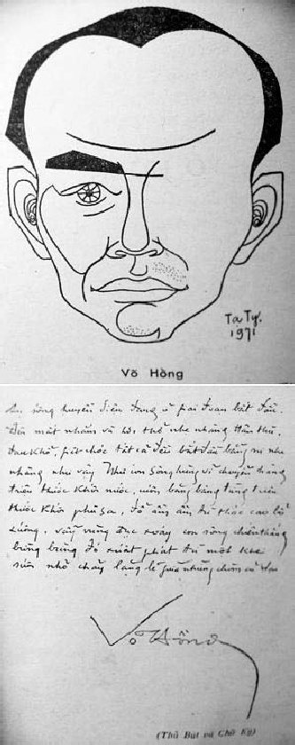

Sinh ngày: 5-5-1921 tại Ngân Sơn, quận Tuy An, tỉnh Phú Yên (Trung Việt). Viết văn từ năm 1959.

Võ Hồng và thủ bút.
Tác phẩm:
1. Hoài cố nhân, Ban Mai xuất bản, 1959
2. Lá van xanh, Thời Mới xuất bản, 1962
3. Vết hằn năm tháng, Lá Bối xuất bản, 1966
4. Con suối mùa xuân, Lá Bối xuất bản, 1966
5. Khoảng mát, An Tiêm xuất bản, 1966
6. Hoa bươm bướm, Lá Bối xuất bản, 1966
7. Người về đầu non, Văn xuất bản, 1968
8. Bên kia đường, Mặt Trời xuất bản, 1968
9. Gió cuốn, Lá Bối xuất bản, 1968
10. Những giọt đắng, Lá Bối xuất bản,1969
11. Trầm mặc cây rừng, Lá Bối xuất bản, 1971
12. Như cánh chim bay, Lá Bối xuất bản, 1971
Đã cộng tác với: Bách Khoa, Văn Hữu, Mai, Giáo Dục Phổ Thông, Văn, Giữ Thơm Quê Mẹ, Tin Văn, v.v.
Võ Hồng và quê hương bất hạnh
Trong không khí sinh động của văn nghệ miền Nam Việt Nam mười năm qua, vóc dáng Võ Hồng như một khiêm nhượng, một trầm lặng vì chiều hướng sáng tác cũng như kỹ thuật hành văn của nhà văn không nằm chung với ước lệ thời đại, thời đại cháy bỏng môi hôn, vòng tay bấn loạn và thể xác cuồng mê!… Võ Hồng cô đơn di hành trên lộ trình nghệ thuật do mình chọn lựa. Nhà văn không dễ dàng chấp nhận sự thiếu chân thành, không chạy theo thị hiếu độc giả, không thỏa mãn đòi hỏi nhất thời của thị trường chữ nghĩa. Nhận định về Võ Hồng, quả thực Trần Thiện Đạo, đã soi sáng đúng mức giá trị và cương vị của Võ Hồng trước cuộc đời và văn học:
… Có những kẻ mà mỗi lời nói, mỗi cử động, mỗi hành vi chừng như được trời phú cho một thứ tiềm lực tự tại, đủ sức làm chấn động dư luận một thời, nhưng, cũng hệt như bong bóng thổi phồng nhờ bầu khí giả tạo, lời nói ấy, cử động ấy, hành vi ấy thường chỉ chiếm mặt tiền thời sự trong giây lát để rồi cùng với thời gian mà mất dạng vĩnh viễn.
Võ Hồng không thuộc thành phần minh tinh ngắn ngủi ấy. Chúng ta ít nghe nói tới anh, nhưng đồng thời, chúng ta lại chừng như hiếm khi thấy anh vắng bóng lâu dài trên trường chữ nghĩa xứ này sắp tròn mười năm qua. Là vì bản tính của anh vốn mang thứ sắc thái vừa âm thầm, vừa tế nhị của hạng người chừng mực, và văn phẩm của anh biểu lộ tính chất mực thước, mực thước đến độ khiêm tốn và e dè.
(Hoài cố nhân, Nghĩ về Võ Hồng T.T.ĐX, 67)
Đúng, Võ Hồng một nhà văn mực thước, không thiếu phần trang trọng, cẩn thận trong mỗi sáng tác. Nhưng chính cũng vì thế, tác phẩm của Võ Hồng chỉ có ảnh hưởng với một lớp độc giả nào đó, ưa suy nghĩ, thích trở lại quá khứ để tìm về kỷ niệm, tìm khoảng thời gian đã mất để thấy có mình. Võ Hồng sáng tác rất đều, như nhà điêu khắc cần cù đục, giũa để biến tảng đá xù xì thành một công trình mỹ thuật. Xuyên qua hơn mười tác phẩm, người đọc, rất ít gặp những thoáng đam mê rực lửa, những hung cuồng ân ái với ngất ngây mùi da thịt. Người ta thấy từng dòng u buồn lên nhè nhẹ, từng xót xa đắm chìm tâm trí, từng bâng khuâng tiếc nuối, từng cơn đau úp mặt, từng đắng cay tủi nhục của kiếp người bơ vơ giữa cuộc chiến tàn khốc đã và đang tiếp diễn trên quê hương bất hạnh này.
Võ Hồng viết, như kể lể nỗi buồn thương lãng đãng, như gửi gấm ở mỗi dòng chữ sự chán mỏi đến tận cùng, nhưng vẫn làm vẻ thản nhiên, dung dị. Võ Hồng viết nhiều thể truyện, nhưng có lẽ, chỉ những truyện viết về cuộc chiến, dù thuộc quá khứ, mới thể hiện đúng bản chất Võ Hồng. Vì ở đấy, qua đấy, nhà văn đã đi vào chiều sâu ý thức, để nói lên những gì cần nói qua lời văn, qua từng hoàn cảnh khốn khó. Võ Hồng đã sống và trải qua những buồn vui thế cuộc, đã say mê lý tưởng với nhiệt tình. Nhưng cuối cùng, cánh chim rã rời tìm về tổ cũ, tìm về bao tháng ngày xa lắc trong tâm tư và đối diện thường trực với thực tại nhức nhối phía trước. Tất cả những thầm kín đó, được trải rộng trong kích thước vừa đủ, với những sự tình giằng co qua tâm trạng mỗi nhân chứng, cùng câu cười tiếng khóc âm vang trong tiềm thức người đọc. Việt Nam, ôi! Việt Nam, hai tiếng đó như gieo vào lòng mỗi người yêu nước những giày vò với nhiều hưng phế do lịch sử đẩy đưa: 80 năm nô lệ Pháp, bao nhiêu đối kháng nổi lên qua Đông Kinh Nghĩa Thục, Hoàng Hoa thám, Việt Nam Quốc Dân Đảng, v.v. đều đi vào thất bại. Sự thất bại thê thảm giữa sức mạnh tinh thần và vũ khí tối tân, thất bại giữa tổ chức khoa học với nếp sống tùy thời. Nhưng dù sao, các chứng tích lịch sử ấy cũng đã thức tỉnh phần nào cơn mê muội của một lũ người cầu an hưởng lợi, để "gây vốn" sau này cho cuộc vùng lên vĩ đại của dân tộc.
Võ Hồng, con người tha thiết với quê hương, đất nước, đã dấn thân trong suốt 9 năm khói lửa, chịu bao nhiêu gian khổ, bao nhiêu cay đắng, chỉ dành cho phần mình ít ỏi kỷ niệm và một chút niềm tin. Kỷ niệm và niềm tin, được Võ Hồng trải trong hai tác phẩm Hoa bươm bướm (1966), Như cánh chim bay (1971) cùng vài ba truyện ngắn in rải rác trong các tập truyện.
Tác phẩm Hoa bươm bướm, bắt đầu bằng khoảng thời gian báo trước sự chuyển mình của lịch sử. Khuôn mặt của Quý và Thức với những lời đối thoại sắc và khô đã tạo nên không khí nặng nề của một khung cảnh sắp đi vào môi trường khác với bất trắc không thể lường đoán. Những người trẻ tuổi đã ý thức được vai trò của mình trước lịch sử. Quân Pháp đầu hàng Nhật sau đêm mồng 9 tháng 3-1945, người Pháp thua không phải là hết, không phải do đó, nước Việt Nam được an hưởng thái bình. Trái lại, với hành động thất nhân tâm của quân phiệt Nhật, người thanh niên Việt Nam lúc ấy đã nhìn ra nhiệm vụ, một nhiệm vụ thiêng liêng. Họ không tin Nhật có thể thắng trận chiến này, nhưng vì hoàn cảnh chúng ta phải hợp tác với Nhật để chờ thời. Cái thời đó đến mau hay chậm còn tùy vận nước:
… Má tôi cứ nghĩ rằng ba ngàn mẫu ruộng ở An Hòa và dãy lầu đường Mayer nuôi dưỡng tôi sung túc hơn mọi bằng cấp.
"Người ta đi học không chỉ vì bằng cấp".
"Cố nhiên là chị nói đúng và tôi cũng đồng ý như chị".
Sinh viên ở lại Hà Nội có nhiều việc để làm lắm. Giai đoạn này là giai đoạn của thế hệ chúng ta. Thằng Thanh, thằng Hiệp vào trường Thanh Niên Tiền Tuyến ở Huế. Ban xã hội của Tổng hội Sinh viên hoạt động đắc lực trong việc cứu đói. Các tổ chức chính trị lớp công khai, lớp bí mật làm sôi nổi không khí của Thủ đô.
"Nhưng chúng tôi không tin là quân Nhật thắng trận".
"Nhiều người cũng tin như vậy, nhưng hoạt động chính trị đâu có phải vì tin rằng quân đội Nhật thắng trận? Cuộc đảo chánh mồng 9 tháng 3 là cái dịp tốt để dân tộc ta giải quyết lấy vận mệnh của mình. Vận mệnh của mình không phải do quân Nhật giải quyết".
Thức nhấm nháp tách nước trà vừa đưa mắt nhìn lên đầu tủ. Bức ảnh Thống chế Pétain treo lấp sau lọ hoa cúc trắng. Thức chỉ lên bức ảnh:
"Chị vẫn còn trung thành với Thống chế?"
Quỳ mỉm cười:
"Đâu có, bà nội đã hạ bức ảnh xuống hôm 9-3, nhưng tôi ngăn lại, muốn giữ bức ảnh đó một thời gian để nhìn chơi. Ít nhất nó cũng nói với mình nhiều hơn là một mảnh tường trống trơn hay một bức tranh tầm thường. Cốt nhất là mình hết nghe nó nói".
"Phải, tôi vừa nghe nó nói rằng: đừng tin ở một sự huy hoàng nào hết. Cái gì rồi cũng qua đi…"
(Hoa bươm bướm, trang 8-9)
Những khuôn mặt của Thức cũng như Cẩn – sinh viên kiến trúc – hiện diện trong tác phẩm Hoa bươm bướm, như một thoáng qua. Tác giả dùng họ trong khoảnh khắc, để thực hiện một ý tình nào đó, được nhà văn xác định rõ ràng trước khi viết. Thức yêu Quỳ, muốn cùng nàng kết tóc, nhưng Quỳ cô gái trí thức, học trường đầm, không yêu Thức mà cũng chưa yêu ai ở giai đoạn này, kể cả Cẩn và người sinh viên luôn luôn sốt sắng mỗi khi Quỳ nhờ vả. Tác giả đã dùng thị xã Đà Lạt, nơi nghỉ mát của nhà giàu, với những chiếc va-li sang trọng, với khung cảnh nên thơ của núi rừng cao nguyên để ghi nhận những đổ vỡ, hận thù cũng như khí thế vùng lên của đám dân thị xã, từ lâu được an hưởng thanh bình và khí hậu ưu đãi.
Chính trong khuôn khổ thị xã này, do thực dân tạo nên, những người Pháp đã sống vô cùng khốn khó trong trại tập trung (Cité Decoux) dưới quyền kiểm soát của quân Nhật, dưới sự khinh khi của người dân nô lệ hôm qua, nay được dịp trả thù cho hả cơn tức giận, mối thù 80 năm mất nước! Nhưng không phải mọi người đều như thế, trường hợp Quỳ đã giúp đỡ Caroline – người bạn gái cùng học Philo ở Lycée – trong lúc khốn khó, bằng cách mua giúp thức ăn, để ít ngày sau, Quỳ đã mang lụy với Ủy ban Cách mạng Thị xã Đà Lạt. Hình ảnh người Pháp, trong những ngày bị hạ bệ, thật thê thảm, dưới nét mực Võ Hồng:
… Một người Pháp già đi ngược chiều với nàng, mặt cúi xuống nhìn đất và hai tay xách giỏ nặng. Những gói bọc giấy chen lấn với cải su, khoai tây, hành. Một bó kiệu tây thò đầu ra ngoài miệng giỏ. Quỳ có cảm tưởng ông ta mang nặng 80 năm tội lỗi trên vai. Hai giỏ thức ăn trĩu năng hai bên tấm thân gầy, cao ngã chúi về trước khiến nàng liên tưởng đến cái dấu chấm hết. Chấm hết những trang sử do Courbet, Rigault de Genouilly, Varenne, Decoux viết ở trên đất này…
(Hoa bươm bướm, trang 25)
Nhưng trong khi ấy, miền Bắc thiếu gạo. Một triệu người vừa gục xuống lòng đất. Chính phủ Trần Trọng Kim, dù là bù nhìn của quân phiệt Nhật, cũng vẫn phải tìm đủ mọi cách trợ giúp miền Bắc, để cứu những người dân quê sống thoi thóp chờ vụ lúa sắp tới. Sự chuyên chở lúa gạo trong thời gian đó phải xin phép cơ quan Nhật dù chở từ tỉnh nọ qua tỉnh kia. Một triệu người miền Bắc chết đói cũng do tội của Nhật và Pháp. Nhật bắt bỏ ruộng trồng đay, Pháp cấm chuyên chở gạo từ miền thừa sang miền thiếu.
Trong các hình thức trợ giúp cứu tế, có cuộc tổ chức văn nghệ. Quỳ đóng góp cho đêm văn nghệ đó bài ca Chùa Hương, thơ Nguyễn Nhược Pháp, Hoàng Quý phổ nhạc. Quỳ đã thấy Luân, bí thư của Tổng Đốc, và nàng tức giận vì dáng điệu Luân khinh khỉnh dễ ghét. Luân, một thanh niên có học mới ra đời, ném mình vào công việc của chính quyền lúc ấy, với mớ kiến thức cứng ngắc qua sự hiểu biết về luật lệ hành chính, luôn luôn nghiêm minh trong vấn đề giao tế. Luân người Trung, học ở Hà Nội, đã trải qua những giờ phút căng thẳng thẳng nhất của cố đô Thăng Long khi quân Nhật đe dọa Đông Dương bằng vũ lực, cũng như đã chứng kiến những trận oanh tạc của phi cơ Mỹ xuống Hà Nội hồi quân Nhật chiếm đóng. Võ Hồng viết rất chính xác về không khí miền Bắc trong thời gian đó:
… Trên bãi đất trống cạnh hồ Thiền Quang, người ta đào những hầm hình chữ Chi, rộng bốn tấc và sâu không hơn tám tấc. Người đứng lổn nhổn dưới hầm (gọi là hào thì đúng hơn).
Trên bãi chợ hàng Da, người ta không đào hào mà lại đắp hào cao trên mặt đất. Hào xây bằng gạch. Có còi báo động, kẻ mua người bán và đồng bào ở mươi đường phố lân cận, đội nón, che ô, chen chúc nhau vào ngồi trong hào. Luân có ý nghĩ thú vị, giá mình là phi công oanh tạc, ở trên máy bay nhìn xuống thấy cảnh tượng ngổn ngang và ngớ ngẩn này, chỉ thương hại và buồn cười và không nỡ bắn phá gì hết…
(Hoa bươm bướm, trang 38)
Vì an ninh chung, Luân cũng phải tản cư ra khỏi thành phố Hà Nội, về miền quê, tránh bom đạn. Miền quê đất Bắc được nhà văn vẽ lại bằng những nét thật duyên dáng, thật nên thơ, qua ruộng mạ xanh non, qua cánh đồng phẳng thấp, qua con đường làng quanh co rợp bóng tre với ao bèo, ao rau muống có chiếc cầu ván nhỏ bắc ra lòng ao. Đoạn văn này, chắc chắn tác động sâu xa vào tâm thức những người di cư đã gần 20 năm nay, không nhìn thấy quê hương yêu dấu cảnh vật thân thuộc như hàng cau, mái rạ, đụn rơm, v.v. nhưng sự thật chúng vẫn sống mãi trong lòng những con người "thiên lý tương tư".
Dù bom đạn có rơi xuống mỗi ngày mọi người cũng không vì nó mà bỏ quên sự sống. Lúc nào có máy bay, chui xuống hầm, máy bay đi, lại công nào việc nấy.
Những yếu điểm của thị xã Đà Lạt do quân Nhật trấn giữ. Việc sung công nhà cửa được thi hành bừa bãi. Nhà của bà nội Quỳ cũng bị niêm phong trưng dụng vì nó nằm trong vòng đai phòng thủ. Quỳ nhờ Hảo – cô bạn gái – đến cầu cứu Luân, người của chính quyền Việt Nam, mong can thiệp với cơ quan Nhật trả nhà. Luân từ chối khéo vì sợ bị nghi ngờ không trong sạch. Quỳ hậm hực trong lòng. Nhưng rồi nàng vẫn lấy lại được nhà, do Cẩn giới thiệu với Mai Trang, người đàn bà quen lớn với Tòa sứ Nhật. Người ta đồn đại, Mai Trang là tình nhân của ông Sứ Nhật Ishikawa, ông này đã du học ở Ba-lê, nói tiếng Pháp giọng parisien, và nhiều chuyện bí mật xoay quanh thân phận Mai Trang cùng thế lực của nàng. Mai Trang làm Trưởng đoàn Hồng Thập Tự do Tòa Sứ Nhật đỡ đầu, vì sự giao dịch công việc, nàng quen Luân và có nhiều cảm tình với chàng. Luân, gã thanh niên trí thức ngây thơ, tin tưởng vào sự giúp đỡ thực tình của Nhật cho Việt Nam, nên chàng không muốn có sơ hở nào về tư cách, có thể làm mất tín nhiệm đối với họ. Luân không giúp ai việc gì để lụy đến mình. Ngay cả với bạn thân, muốn chàng giúp đỡ trong vấn đề chuyên chở gạo, Luân cũng thẳng thắn từ chối, để nhận những câu trách móc gần như chửi rủa:
…"Thôi, tao bắt tay mày. Đừng tưởng tao giận vì số lợi hai mươi tấn gạo ấy đâu. Vì tao sẽ vẫn cứ chở như thường. Nhưng bằng cách khác. Bằng cách gì mày biết không?"
"…"
"Bằng cách này".
Tiến móc ví trong túi áo, rồi ra dấu đếm tiền bằng ngón tay.
"Tao đi liền bây giờ, xuống Tòa Sứ Nhật Bản. Tao sẽ có chữ ký nửa giờ sau. Mày cứ ngồi yên đấy mà làm ông Khổng Tử đời nay…"
(Hoa bươm bướm, trang 63)
Tiền và đàn bà là nhất, bất cứ ở thời đại nào. Nó có sức mạnh thay đen đổi trắng, làm đảo lộn những giá trị. Nó làm cho con người thăng hoa đời sống hay chịu ô danh, nhục nhã suốt đời. Nó là luật chơi, kẻ nào từ chối, tức là từ chối luật chơi, không biết sống, trước sau gì cũng bị nó nghiến nát.
Lời ước đoán của Thức ở đầu cuốn truyện đã thành sự thực. Nhật thua trận sau hai trái bom nguyên tử ném xuống Hiroshima và Nagasaki. Lợi dụng thời cơ, phong trào Việt Minh từ bóng tối nhảy vọt ra ánh sáng chính trị, với thành tích ám sát, tuyên truyền thuộc thời gian bí mật, để khích động quần chúng tham gia vào công việc cướp chính quyền toàn quốc. Những cuộc mít-tinh, biểu tình được tổ chức đại quy mô với đông đảo thành phần tham dự. Những khẩu hiệu yêu nước được hô to. Những bàn tay nắm chặt giơ cao. Luồng gió Cách mạng đã hất Luân ra khỏi chính quyền thị xã. Luân đứng trên ban-công nhìn đoàn biểu tình, trông rõ từng nét mặt quen thuộc, bạn bè và đám công chức tuy không hăng hái lắm, nhưng đi thẳng hàng ngay lối. Điều này chứng tỏ tinh thần kỷ luật mà "các nhà nước" đã thay nhau dạy họ. Cuộc cướp chính quyền của Việt Minh tại thị xã, không gặp khó khăn nào cả. Hôm sau, nhà Luân bị chính quyền Cách mạng niêm phong. Chàng phải đi ở nhờ nhà Hảo. Căn nhà đó là của Chính phủ cũ cấp cho Luân, nay Chính phủ chết rồi, chàng không có quyền ở lại. Mất căn nhà ấm cúng, trong khung cảnh thơ mộng, thực tình Luân cũng tiếc, nhưng không tiếc bằng chiến thắng của Cách mạng mà không phải trả bằng máu.
Sau khi cướp chính quyền, Cách mạng miền Nam cũng không có thời gian để tổ chức chu đáo guồng máy cai trị. Dưới Sài Gòn súng đã nổ, quân đội Pháp đã theo chân quân Anh vào đất cũ. Từ đó, những chuyện lộn xộn bắt đầu xảy ra, giữa chính quyền Cách mạng và quân đội Pháp. Dân chúng sôi sục căm thù, muốn dùng sức người để tiêu diệt đoàn quân Cécile với súng ống tối tân, máy bay, xe tăng nờm nợp. Còn quân Nhật tuy bại trận nhưng vẫn còn đủ sức mạnh để làm khó chính quyền Cách mạng lúc đó.
Mai Trang đến thăm Luân trong một hoàn cảnh không mấy thuận lợi. Qua câu chuyện, Luân mới biết nàng là cán bộ Việt Minh "nằm vùng" trong lòng địch. Nếu quân Nhật không bại trận sớm, có lẽ nàng đã bị "Kem-pei-tai" bắt. Mai Trang ngỏ ý mời Luân tham gia Ủy ban, nhưng Luân e dè. Nhân dịp này, nàng cũng cho Luân biết luôn thân thế mình. Mai Trang cô gái miền Nam, ra Hà Nội học ở Couvent rồi lấy chồng làm Tham Tá, người Bắc. Lấy nhau 6 năm, chưa sinh con, theo tục lệ cổ, gia đình bắt chồng nàng phải lấy vợ lẽ, để có người nối dõi. Nàng không chịu, đành ly dị, tuy hai vợ chồng vẫn yêu thương nhau. Bây giờ nàng cô đơn, hoàn toàn cô đơn trước cuộc đời này.
… Mai Trang chợt rùng mình. Giọng nàng nhỏ lại như một hơi thở, run run:
"Trang thấy lành lạnh. Mất hết cả rồi. Tuyệt vọng rồi. Còn dè dặt để đợi chờ gì nữa? Luân, anh hãy ôm vai Trang đi. Trong năm phút".
Luân nhìn Trang, bỡ ngỡ vì lời đề nghị bất ngờ.
"Kìa, Trang bảo thật mà. Vas-y mon enfant, ne fais pas l’idiot".
Luân quàng tay ôm Mai Trang. Nàng ôm choàng lấy Luân, siết chặt giữa vòng tay rồi gục đầu vào vai chàng. Ngón tay Luân bấm vào vai, vào lưng. Thịt mềm, ấm dưới ngón tay. Mùi thơm của tóc, của phấn, của làn áo mỏng làm chàng ngây ngất. Mai Trang ngẩn mặt lên. Đôi mắt nàng ướt đầm:
"Anh hôn Trang đi. Hôn cho rõ dài".
Luân cúi xuống hôn trên đôi môi…
(Hoa bươm bướm, trang 86-87)
Câu chữ Pháp, Mai Trang dùng để ra lệnh cho Luân, vừa yêu mến vừa trịch thượng, nhưng sở dĩ nàng phải dùng nó, nhằm che lấp sự trơ trẽn của ngôn ngữ. Đoạn văn trên, rất hiếm hoi trong các tác phẩm của Võ Hồng. Nó được ghi nhận như một ngoại lệ.
Không khí sinh hoạt của dân chúng thị xã Đà Lạt như ứ nghẹn bởi sự đe dọa của chiến tranh Pháp – Việt. Các thanh niên bắt buộc phải tập quân sự và tham gia đoàn tự vệ. Các công sở lặng lẽ rời thành phố. Dân chúng đã được lệnh tản cư. Có người quá nghèo không còn tiền để sinh sống nên vấn đề tản cư làm họ lo lắng, nếu không đi, bị coi là Việt gian tính mệnh khó mà an toàn. Võ Hồng đã viết rất đúng tâm trạng và hoàn cảnh xã hội trong giai đoạn ấy, dù hoàn cảnh được thu hẹp trong một gia đình:
… Anh bếp cũ của nhà Quỳ, gặp nàng bệu bạo khóc:
"Dù có lệnh tản cư nhưng nhà cháu nghèo quá, lấy tiền đâu mà mua vé tàu ra Bắc cả gia đình. Còn nếu ở lại, thì thành Việt gian cũng chết".
Bà nội nhất định không tản cư.
"Con bảo nội tản cư về đâu bây giờ? Quê hương ở dưới Tân Châu, Hồng Ngự mà bây giờ về đó sao được? Giặc đã dậy ở dưới đó rồi. Chạy xuống trại hầm, trại mát thì nội ở nhờ nhà ai? Thôi nội cứ ở đây".
"Nhưng ở đây người ta bảo là Việt gian".
"Nội già rồi. Làm Việt ngay hay Việt gian gì cũng được".
(Hoa bươm bướm, trang 97)
Bà cụ nhất định không đi chỉ vì sợ cảnh ăn nhờ, ở đậu khổ lắm, không chịu nổi. Giữa lúc ấy, Quỳ đang bị ban Đặc vụ theo dõi vì nàng tiếp tế cho Caroline ở Cité Decoux, trại tập trung người Pháp dưới thời Nhật. Mai Trang lại hiện ra cứu nàng, bằng cách bảo làm đơn xin gia nhập Đoàn nữ cứu thương. Hai ngày sau, Quỳ đã mặc blouse trắng với chữ thập đỏ trên mũ.
Tình hình căng thẳng, mọi người lũ lượt ra khỏi thành phố, trong đó có Luân. Cái cảnh tản cư lê thê, lếch thếch, đi chỗ này, nghe tin địch đánh chỗ kia với tâm trạng vô cùng hoang mang. Những ngày tản cư là những ngày sống tạm với nhiều lo âu phiền muộn cho mỗi số phận, mỗi gia đình. Nhất là tản cư ở vùng rừng núi càng chán. Chả biết làm gì kiếm sống, ngày ngày nhìn rừng núi, đêm đêm nghe hổ "à ùm, "lép bép" với vượn kêu, chim hú, muỗi, vắt như chấu làm sao chịu nổi?
Luân được mời tham gia vào Ủy ban Cách mạng vì chàng quen biết lớn với quân Nhật khi còn ở Tòa Tổng Đốc. Người ta mời Luân, nhằm để giải quyết các khó khăn giữa tàn quân Nhật và Ủy ban trong vấn đề đụng chạm về quân sự. Luân nhận lời, để tránh những ngày tản cư buồn nản.
Thị xã Đà Lạt thật sự đi vào không khí chiến tranh. Quỳ đã vượt thoát được nguy hiểm qua bốn trạm kiểm soát của quân Nhật. Nàng phải hóa trang thành cô gái nghèo khổ, lem luốc để tránh sự háo sắc của lính Nhật. Nhưng không may cho Quỳ, khi đến trạm kiểm soát của bên ta, nàng bị giữ lại, do lệnh của Ban Chỉ huy. Cuộc điều tra được thực hiện với những câu cật vấn như bắt buộc phải nhận tội. Quỳ choáng váng vì không ngờ sự tình có thể xảy ra như vậy. Chuyện nàng mua giùm thức ăn cho Caroline, chỉ do tình thương đối với người bạn học, hơn nữa, việc đó ở dưới thời chính phủ Trần Trọng Kim, nay người ta khép tội nàng tiếp tế cho địch, trong khi nàng vì Cách mạng ra khỏi thị xã.
Khi cuộc chiến mới bắt đầu, vấn đề kiểm soát thật gắt gao đối với người thành phố. Mặc chiếc áo popeline có hai sọc xanh đỏ, mang một tấm gương nhỏ soi mặt, cũng đủ yếu tố kết tội làm do thám cho địch.
Cái cảnh xử tử Việt gian trong thời kháng chiến được Võ Hồng viết thật xúc động. Nó như bản cáo trạng. Nó thảm thiết và tàn nhẫn. Nó là số đông mù quáng:
… Hôm đó là chiều Chủ nhật, các nhân viên nghỉ việc, phòng giấy đóng cửa. Một người đội viên nói với bạn đồng đội:
"Hôm kia mình mới đi coi xử tử Việt gian".
"Xử ở đâu?"
"Ở bãi cỏ sân vận động dưới Dran. Thằng cha can tội lùa bò về bán cho Pháp. Nó khôn, lùa đi toàn bằng ngả Ankroet. Bị đặc vụ của ta bắt dẫn về dưới này. Ban Chỉ huy Mặt trận xử tử".
"Nó có sợ không?"
"Sợ như cha chết. Dẫn nó ra cột ở cây xử bắn, nó khóc lạc giọng, khản tiếng. Giọng nó khan đặc và cứ gào: Trăm lạy chính phủ! Chính phủ tha con. Trăm lạy đồng bào, đồng bào xin giùm với chính phủ tha cho con, con đội ơn đồng bào. Con đội ơn chính phủ".
"Đồng bào đi coi có đông không?"
"Đông như kiến… Lần đầu tiên xử bắn mà!"
"Nó lạy đồng bào rồi đồng bào nói sao?"
"Mỗi lần nó kêu khóc nhờ đồng bào xin giùm với chính phủ thì đồng bào lại hô to: Bắn! Bắn!…"
(Hoa bươm bướm, trang 126)
Đó, cái mạng con người trong chiến tranh nó như vậy và tòa án nhân dân chỉ tượng trưng cho một quyết định đã xếp đặt trước.
May mắn, Quỳ được tha để sung vào Ban Tuyên truyền, vì họ đang cần một người giỏi Pháp ngữ để phiên dịch tài liệu. Luân có lại thăm Quỳ trong trại giam một lần. Vì cơ sở ở gần nhau, nên họ thường gặp. Sự hiểu lầm giữa hai người lúc trước, đã dần dần tan biến. Tên Đạo, Trưởng ban Tuyên truyền mê Quỳ, nàng nói chuyện này với Luân. Quỳ ghét Đạo, nhưng vẫn phải làm việc dưới quyền hắn. Luân cảm thấy bâng khuâng vì bắt đầu yêu Quỳ thầm kín. Quỳ cũng vậy, nhưng khi nói chuyện nàng vẫn gọi Luân bằng ông, xưng em. Một buổi chiều, Đạo giữ Quỳ ở lại bàn giấy vì lý do công tác, nhưng mục đích để tỏ tình. Quỳ chống cự. Đạo toan dùng bạo lực, Luân chợt vào. Đạo căm thù, tìm cách đưa mỗi người đi một ngả. Luân ở lại với toán liên lạc. Quỳ theo cơ sở đến Tháp Chàm.
Trong mấy ngày Luân công tác đặc biệt tại Fimmon để điều đình với quân Nhật về vụ Vệ Quốc bắn chết tên lính Nhật, Mai Trang tìm đến chỗ ở của Luân. Không gặp, nàng viết thư để lại. Nội dung lá thư đầy lời lẽ âu yếm và nói sơ qua về đời sống với gian truân, cũng tỏ ý lo ngại cho số mệnh Luân. Trang đã yêu Luân thật rồi.
Những ngày chịu áp lực quân sự nó nặng nề hơn cả khi giao chiến. Con người sống với lo âu, chán nản. Túng thiếu, bệnh tật luôn luôn đe dọa. Súng đạn như chờ sẵn để kết liễu đời mình. Mới khởi đầu chiến tranh mà thương binh đã thiếu thuốc men, ngắc ngoải trong tay tử thần. Những thanh niên yêu nước gục ngã mỗi ngày. Tin từ mặt trận đưa về, chẳng mấy khích lệ. Tiếng súng đến đâu, Ủy ban và dân chạy đến đấy. Từng đêm đen dày đặc giăng ngang tầm mắt mỗi người lìa quê hương, lìa thành phố với tiện nghi quen thuộc.
Rồi định mệnh đẩy đưa, Luân lại gặp Quỳ ở một sân ga, khi toàn bộ cơ sở rút khỏi tầm đạn. Luân đã mệt mỏi, Quỳ cũng mệt mỏi. Nhiều người mệt mỏi, dù mới phiêu bạt mấy tháng. Nhưng tình yêu làm tuổi trẻ dựa vào nhau mà sống, mà tin tưởng. Hai bàn tay lồng quấn quít trong đêm tối với hơi nóng thân xác tỏa ra làm tan đi giá lạnh đêm dài lưu lạc.
Mai Trang đã xuôi về một làng miền biển. Nàng mua đìa cá tạo phương tiện sinh sống. Quân Pháp chiếm dần từng nơi, như vết dầu loang. Trang nghe tin Luân chết trận, nhưng không đúng. Một chiều, Luân và Quỳ gặp lại Mai Trang. Cả ba đều mừng rỡ. Câu chuyện vui buồn, gian khổ vì chiến tranh được kể lại. Những người chạy loạn bắt đầu túng thiếu vì chỉ ăn mà không sản xuất. Đồ quý giá bán dần mòn cũng hết, kể cả áo quần. Thuốc lá thơm, cà phê phè phỡn trong những ngày đầu tản cư, bây giờ không còn. Có người phải giã gạo thuê đổi lấy miếng cơm. Có người xoay xở buôn bán quanh quẩn để sống qua ngày. Cuộc chiến chẳng biết đến bao giờ chấm dứt. Chiến tranh không những làm chết người ở tiền tuyến, còn ở hậu phương, chết vì ốm đau thiếu thuốc, thiếu cơm. Nghiêm, một nghệ sĩ 22 tuổi đời, chết chẳng trối trăng một lời, sau những ngày nằm bệnh. Bốn nhạc sĩ đã khiêng chiếc quan tài ra khu đất trống đầu làng, nơi trẻ vẫn thả bò ăn cỏ rải rác trên những ngôi mộ cũ.
Võ Hồng viết đơn sơ nhưng vô cùng thê thiết. Thân phận con người trước súng đạn như thế đó. Nếu chàng nghệ sĩ 22 tuổi đời kia sống ở nơi có đầy đủ thuốc men, hoặc được nuôi dưỡng tử tế chắc thoát khỏi lưỡi hái tử thần. Thảng hoặc, nếu vì đoản số, ít nhất, anh ta cũng không đến nỗi mang xuống tuyền đài sự câm nín đau buồn như vậy!
Những ngày Quỳ và Luân sống với Mai Trang thật thần tiên. Mai Trang lo liệu chu đáo vì yêu Luân. Nhưng đau thay, một tối nàng đã nhìn ra sự thực. Trong đêm vắng, dưới bụi chuối, Luân ghì chặt Quỳ giữa vòng tay, và cánh tay Quỳ cũng như những sợi dây leo quấn chặt lấy thân xác đàn ông. Thế là hết! Bao nhiêu yêu dấu, vỗ về cũng bằng thừa. Mai Trang thua cuộc, nhưng vì lòng quảng đại, đã giúp hai kẻ yêu nhau vượt thoát được hoàn cảnh, một hoàn cảnh khốn khó trong lúc chiến tranh tràn vào khu vực Phương Cựu, nơi họ đang có mặt. Hành động tàn bạo của quân Pháp như hiếp dâm, đốt nhà được nhà văn mô tả rất sát, rất sinh động làm người đọc vừa hứng thú, vừa tức giận, oán thù!
Luân và Quỳ đã thoát, dìu nhau đi vào khung trời tình ái với mặn nồng hoa bướm ở phương nào đó, chiến tranh chưa in dấu. Còn Mai Trang, nàng dấn thân vào cuộc chiến để tìm quên, có lẽ.
Hoa bươm bướm, tác phẩm đã lấy giai đoạn đầu của cuộc chiến địa phương làm bối cảnh, ở đó, nhà văn phác họa những nét chính và sử dụng những mẫu người tượng trưng cho mỗi thành phần xã hội lúc ấy. Võ Hồng viết rất nhiệt tình, trung thực. Với cái nhìn tinh tế và trí xét đoán minh bạch nhằm mục đích đưa người đọc tìm về quá khứ oai hùng nhưng đau xót, qua nhiều đổ vỡ, qua bao nhiêu xác người trai trẻ gục xuống, bao nhiêu dòng lệ đã tuôn trào! Có điều đáng tiếc, nhân vật Mai Trang quá lý tưởng, và sự có mặt của một bóng đàn ông trong buổi tối ở nhà nàng ở làng Phương Cựu, dù hình ảnh này chỉ được dùng như biểu tượng Cách mạng, nhưng nó không đủ chứng minh sự dấn thân của Mai Trang vào "tổ chức" qua lá thư cuối sách. Vả lại, nếu Mai Trang đã "hoạt động bí mật" cho Mặt trận từ hồi Nhật, trên thực tế, ai cho phép nàng có được một thời gian tương đối thanh thản để mơ mộng, rượt bắt tình yêu? Sự việc tuy nhỏ nhưng có thể vì nó, cuốn sách mất đi một phần tác dụng.
Võ Hồng lúc nào cũng bị quê hương, chiến tranh bủa vây suy nghĩ. Cũng chính ở môi trường này, Võ Hồng viết thoát và đạt nhất. Nó là mảnh vườn màu mỡ nhưng có nhiều gai nhọn mọc ngầm dưới thớ đất, đôi khi làm đau chân người chăm bón. Chuyện quê hương và chiến tranh đã hai mươi lăm năm rồi, nước Việt Nam bất hạnh đã kinh qua quá nhiều đau khổ, quá nhiều tan nát. Những con người may mắn thoát chết, nhìn trở lui con đường đã đi, không khỏi kinh hãi, nhưng nó vẫn đủ sức làm mình nhớ thương vời vợi. Nó đã ghi dấu khoảng đời đẹp nhất của tuổi hoa niên. Cuộc chiến ngày hôm qua, còn ướt đẫm máu người dân vô tội, kéo lê trong hồn những lằn roi khổ nhục. Hôm nay, cuộc chiến còn đó, súng đạn còn đấy, tan vỡ còn đây, chỉ thay đổi mục tiêu, đối tượng. Người dân Việt Nam qua mấy lần đau thương, nên chẳng còn gì để đau thương hơn nữa. Nó đã chai sạn trong trí não. Nó băng giá trong mọi suy nghĩ về số phận làm người. Cuộc chiến hôm qua, để đuổi quân xâm lăng ra khỏi bờ cõi, khôi phục nền độc lập cho dân tộc. Cuộc chiến hôm nay, sự tranh thủ giữa hai ý thức hệ trong một quốc gia. Nhưng dù nội dung cuộc chiến có vì gì đi nữa, trên thực tế, hình thức của nó vẫn là trò chơi tàn bạo, lấy cái chết mặc cả sự sống!
Truyện Bên đập Đồng Cháy, in trong tập Những giọt đắng (1969) đã nói lên trọn vẹn nỗi lòng người dân quê nước Việt. Mặt trận tràn lan, bom đạn liếm dần vào ruộng vườn, làng mạc. Thân phận mỗi người tùy thuộc vào may rủi, muốn an toàn tính mệnh bắt buộc phải rời bỏ nơi chôn nhau cắt rốn. Sống, ai cũng muốn, mà xa lìa mái nhà yêu mến với nhiều kỷ niệm chả ai nỡ. Sự giằng co, níu kéo như một cực hình vò xé nội tâm con người. Bà Xự trong truyện Bên đập Đồng Cháy, nạn nhân của sự giằng co đó:
… Bà Xự ngồi yên trên ngạch cửa, hai dòng nước mắt lặng lẽ chảy trên gò má.
Bỏ nhà bỏ cửa mà đi. Bỏ ruộng nương, bỏ vườn tược, bỏ khúc sông và cái bến nhỏ này mà đi. Không, tôi không muốn đi đâu hết. Năm mươi tuổi trên đầu rồi, tôi muốn ngồi yên một chỗ, nằm yên một chỗ mà chết cũng được. Chết là gì? Nhắm hai con mắt lại, nhẹ nhàng buông xuôi hai tay. Khỏi đi cấy. Khỏi cầm quạt giê lúa. Khỏi phải gánh nước đổ vào chum. Khỏi quơ củi nhay vào bếp. Khỏi làm khỏi ăn khỏi lo khỏi tính. Thôi cứ để cho tôi chết. Bà con cứ đi đi. Tôi lớn lên ở trên mảnh đất này, bắt đầu ngắt lá táo, lá keo bỏ vào mẻ sành mảnh chén làm trò chơi nấu cơm với chị em bạn. Rồi cúi lưng xuống tập quơ cỏ lúa, cầm cái cuốc nhỏ tậy dãy cỏ bắp. Đội thúng đi mót lúa, ôm cái rổ đi mò ốc.
Không, không. Tôi muốn chết trên mảnh đất này…
(Những giọt đắng, Bên đập Đồng Cháy, trang 79-80)
Muốn chết ở trên mảnh đất này, mảnh đất đã chứng kiến thân phận mình từ thuở sơ sinh đến bây giờ. Nhưng ngoài kỷ niệm trên, đích thực còn có ám ảnh khôn nguôi khác. Bên đập Đồng Cháy, bà đã gặp ái tình. Năm Xự đã cho bà những giây phút đắm say của thời con gái, khi còn mang tên Lụa. Biết đến bao giờ bà mới quên được, một buổi xế chiều êm đẹp, bà đang cắt cỏ ở bờ soi mía kia. Gió đồng trống thổi vật vã những thân mía như thổi vào lòng tuổi trẻ niềm yêu và Năm Xự đẹp trai, khỏe mạnh, có đôi lông mày đen rậm đã làm xiêu lòng trinh nữ. Rồi từ đấy hai tâm hồn khắng khít. Hạnh phúc lứa đôi dìu họ đi vào vùng trời ân ái. Nhưng uổng thay, số Lụa lận đận, chỉ một trận cảm thương hàn Năm Xự chết! Lụa ở vậy nuôi con khôn lớn, mong sau có phận nhờ. Thằng Xang lớn lên, cầm cày thay bố, không thích lấy vợ, tuy bà Xự muốn nó yên bề. Đến tuổi, thằng Xang đi quân dịch. Ở nhà, bà Xự tính mua hoa xoan, đợi ngày nó mãn lính. Nhưng hỡi ơi! cây xoan trước cửa nhà mới nở hoa một lần, nó đã gục ngã nơi chiến trường vì bị phục kích ở Phù Cát. Thế là hết, bà Xự chẳng còn gì để mong đợi, hy vọng! Do đó, mảnh đất này dù có thành bãi chiến trường, thân xác dù có tan hoang, nát bấy vì bom đạn, bà vẫn cứ ở lại chốn đây với đối với và kỷ niệm. Bà Xự đi tìm kỷ niệm thật. Bà trở lại đập Đồng Cháy, chỗ hẹn hò thuở ban đầu, nơi bờ soi, bên đập nước, có hai mái đầu xanh kề nhau tình tự:
… Bà Xự chợt nhìn xuống lòng nước, soi thấy bóng mình. Hình ảnh cô Lụa tan biến vun vút.
Hết rồi! Hết rồi! Không! Tôi không đi đâu hết. Tôi đã mất hết cả rồi. Tuổi xuân xanh. Chồng tôi. Con tôi. Chỉ còn đập nước này mà tiếng ào ào tuôn đổ không hề thay đổi. Nó đã nhìn thấy tôi tóc đen mướt và má tròn phúng phính. Nó đã nhìn thấy tôi trẻ đẹp và được thương yêu. Chỉ có nó. Nó nhắc nhở đến chồng tôi. Đến hạnh phúc của tôi. Mọi người khác đều nói: Chiến tranh. Chạy giặc. Súng nổ. Bệnh. Đói. Chết… Tôi không còn đủ sức để chống chọi. Cho tôi an nghỉ.
… Thôi bà con đi đi. Chúc bà con mạnh giỏi. Cho tôi ở lại. Không, xin cho tôi ở lại. Tội nghiệp thân tôi. Tôi đã…
(Những giọt đắng, Bên đập Đồng Cháy, trang 98-99)
Bà Xự tự chọn cho mình cái chết ở nơi mà thiên nhiên đã cùng bà tạo nên nhiều kỷ niệm nhất. Trong khi ấy, đoàn người tản cư chạy dớn dác ra khỏi vùng lửa đạn. Nhưng dù nguy hiểm, không ai nỡ bở bà Xự, họ quay lại tìm, gọi. Tiếng gọi của họ bị khỏa lấp vào tiếng bom và tiếng đập nước đổ ào ào! …
Võ Hồng vì đã phiêu bạt trong cuộc chiến quá lâu, nên những gì viết ra đều căn cứ một phần vào sự thực. Đi từ những sự thực, nhà văn dàn trải suy tư của mình trên mặt giấy. Mỗi chữ Võ Hồng viết về chiến tranh như một giọt đắng. Giọt đắng ấy thấm dần vào hồn người làm ngất ngư hình dáng cuộc đời!
Trong những ngày dài kháng chiến, không phải lúc nào nhà văn cũng được ưu đãi và hoàn cảnh cho phép thảnh thơi suy nghĩ. Đi kháng chiến, không phải ai cũng là "đảng viên" mà đa số vì lòng yêu nước, muốn đóng góp chút gì cho dân tộc, để khỏi thẹn với lương tâm. Tác giả đã dạy học, đã tham gia tổ chức, nhưng một ngày, chính phủ chủ trương biên chế mới, nhà văn bị đẩy ra ngoài "cuộc chơi". Trong lúc bơ vơ chờ học nghề mới kiếm sống, nhà văn được một gia đình học sinh cũ, mời về tá túc. Thân phụ học sinh, trước làm Chánh Tổng, giàu có, tính tình phóng khoáng hào hiệp, nhưng sau những năm "ủng hộ" cũng chẳng còn gì ngoài cái xác dinh cơ rộng lớn. Người học trò cũ, tên Phùng đã đi bộ đội và chiến đấu ở Đông Miên, Hạ Lào gì đó. Ông Chánh tiếp đãi nhà văn rất tử tế vì tình sư đệ với con ông một phần, một phần đồng cảnh ngộ. Ông bị chính quyền cô lập vì thuộc thành phần địa chủ, còn nhà văn bị gạt ra ngoài vì "biên chế":
… Ông Chánh bảo tôi:
"Thầy ở đây chơi, bao lâu cũng được. Chỗ này quê mùa, ăn tiêu ít tốn kém. Chỉ cần có gạo và mắm".
"Tôi còn đủ sức để mua được gạo".
"Thầy ăn mỗi tháng cho mạnh nhất là bốn giạ lúa. Nhiều lắm thì sợ tôi không kham nổi chớ bốn giạ, tôi có thể giúp thầy".
"Cám ơn ông, nhưng xin để tôi tự lo liệu phần gạo mắm".
"Trước ngày Cách mạng thì tha hồ, nhà tôi có thể cung phụng cho mươi người một lúc cũng không nao núng. Nhưng bây giờ thì phần lúa giảm tô, phần ruộng bỏ hoang vì nông dân ly khai nhập bộ đội thiếu người canh tác".
… Rau cỏ thì dễ. Người ta thường dùng củ mì hay khoai lang nấu ghé với cơm. Có ăn ghé như vậy một thời gian rồi được ăn bữa cơm mùa – nghĩa là cơm nấu toàn gạo – mới thấy ngon…
(Trầm mặc cây rừng, trang 178)
Trên thực tế, nhiều vùng trong nước, quanh năm đói kém, phải ăn cơm trộn ngô khoai là thường, nói chi đến giặc giã. Nhưng gia đình ông Chánh thuộc giai cấp phú hào, nên chuyện thiếu thốn là điều cực nhọc. Trong thời gian dài thất nghiệp, ngày ngày nhìn xung quanh dãy núi cao chớn chở bao vây, nhìn thân cây bồ lời cao vút với những tổ quạ, tổ ác lót bằng những chà cây lòi sòi, nhìn từng buổi chiều đi cô đơn, nhớ quê hương cách trở với lo sợ tương lai trước mặt.
Nhưng một buổi, người con gái quê mùa hiện ra như niềm an ủi. Tình yêu len nhè nhẹ vào hai tâm hồn, thứ tình yêu ỡm ờ chỉ nhìn bằng mắt và nói chuyện bâng quơ. Thịnh, tên cô gái, con bà Chức Bảy, có quen với gia đình nhà văn. Thịnh có học đôi chút và trời phú cho thông minh nên lời nói ngụ nhiều ý tứ, khác hẳn với các cô gái cùng vùng. Nhà văn càng lúc càng lâm vào thế kẹt của sinh sống, phải bán cả đồng hồ tay và có ý định hồi cư. Thịnh biết chuyện nên buồn.
Tết năm đó quân Pháp mở chiến dịch lớn tấn công tỉnh Phú Yên, Đèo Cả và mặt Tây Nguyên. Nhà văn đeo ba-lô tìm đường tháo chạy theo đoàn cán bộ xã. Quân Pháp đánh bất ngờ làm mạnh ai nấy trốn, nhà văn không có dịp chào Thịnh một câu, một câu thôi, vì tự thâm tâm, mình đã yêu nàng, chắc Thịnh cũng vậy. Có ngờ đâu, cuộc chạy giặc đưa nhà văn về thành. Từ đấy, nhớ thương vời vợi. Ít lâu sau, vùng đất của Thịnh bị khuất phục dưới sức mạnh của súng đạn. Một hôm, ông Chánh đưa vợ vô Sài Gòn chữa bệnh ghé thăm, kể chuyện quê hương, có nói về Thịnh. May quá, nàng chưa lấy chồng. Nhà văn gửi quà: một xấp hàng vải, gương lược và nhiều lọ nước hoa!… Thương nhớ theo thời gian lãng đãng!…
Chẳng may, vợ nhà văn mất vì chứng hoại huyết, sau ba tháng nằm bệnh. Không chịu được cảnh chăn đơn gối chiếc, sau ngày đoạn tang, nhà văn nghĩ đến một người đàn bà. Có nhiều đàn bà được giới thiệu nhưng Võ Hồng chỉ nghĩ đến Thịnh, cô gái quê chất phác:
… Trong những hồi cô đơn, tôi hay nghĩ đến Thịnh. Tôi còn nhớ tâm hồn tươi mát của nàng, yêu dao động và không đòi hỏi quá nhiều ở cuộc đời. Nàng sống hiền hòa thanh thản và tôi muốn đem những tiện nghi hiện tôi có được chia sớt cùng nàng. Tôi cảm thấy cuộc đời của tôi sẽ được bình ổn hơn. Tâm hồn trong sáng yêu đời mang lại cho nàng một năng lực tự tại khó lay chuyển… Sống giữa một vùng rừng núi xa xôi, tôi có cảm tưởng nàng chịu ảnh hưởng cái vóc dáng uy nghi của thiên nhiên hoang dã và nét uy nghi đó in dấu trên mọi cử chỉ nhỏ của nàng. Tôi yêu quý sự nghiêm cẩn trì trọng đó của loài đá tảng, của thân cây rừng hơn là sự bén nhạy linh hoạt của giống lau sậy…
(Trầm mặc cây rừng, trang 193)
Nhưng tiếc thay, mơ ước của nhà văn không thực hiện được, vì sống ở đời, mỗi người đã được an bài theo cung số, do đó mới có đau khổ và oan trái. Tuy đã lấy chồng, nhưng Thịnh còn đó, nhớ thương còn đó, mặc cảm nghèo hèn và định mệnh đã đẩy nàng vào khung trời khác, vĩnh viễn thành một kỷ niệm in dấu trong tâm hồn. Thịnh nghĩ mình quê mùa nên sự gặp gỡ ngày trước đối với nàng chỉ là ước mong trong tuyệt vọng. Những giọt nước mắt không phải để chứng minh lòng thương yêu, mà để tiễn đưa cuộc tình chết yểu với hối tiếc ngàn năm!
Võ Hồng, nhà văn tình cảm. Tất cả mọi suy nghĩ, dù nhớ thương sầu hận, dù căm thù uất ức, bao giờ sự việc cũng do tình cảm hướng dẫn chớ không bởi lý trí. Người ta thường cho rằng, các văn nhân thi sĩ đều là những người nhiều cảm tính, nhờ đấy họ mới biết rung động trước mọi nghịch cảnh do cuộc đời hoặc thiên nhiên đẩy tới, cộng vào sự hiểu biết riêng tư, mới tạo nên tác phẩm. Điều này chỉ đúng một nửa. Nghệ thuật hôm nay, đòi hỏi nhiều hơn thế. Nó không còn là những rung động tầm thường và ước lệ. Nó khơi động tự chiều sâu ý thức, bắt mỗi người làm văn học nghệ thuật phải tra vấn lương tâm, phải suy luận về mỗi dữ kiện được trình bày, phải có một chức năng và nhiệm vụ trong cung cách sinh hoạt văn nghệ. Nó chính là ý thức đời sống trên đời sống vậy. Vì thế, sứ mệnh của văn nghệ không còn nằm ở môi trường riêng biệt thuộc tâm cảm, nó tỏa rộng trong đời sống thứ hai, ở đó, người nghệ sĩ đóng vai trò điều hợp.
Tác phẩm Như cánh chim bay, là sự tiếp nối lịch sử dân tộc đã được Võ Hồng khơi động trong Hoa bươm bướm. Đời sống của các nhân vật như Luân, Quỳ, Tịch, v.v. lại trình diện độc giả với hoàn cảnh khác, ở đấy, mỗi số phận như bị ném vào một môi trường không mấy khích lệ. Trong Hoa bươm bướm nhà văn mới đề cập tới giai đoạn đầu cuộc chuyển mình của lịch sử và bối cảnh chiến tranh chỉ được dàn trải trong một kích thước tương đối nhỏ. Như cánh chim bay diễn tiến trong khung cảnh bề thế hơn, vì cuộc chiến không còn nằm ở phạm vi cục bộ. Ở tác phẩm này, Võ Hồng viết công phu, nghiên cứu kỹ về khía cạnh tâm lý cũng như hoàn cảnh, vị trí của mỗi phần hành có mặt trong những trang sách. Cái trục chiến tranh đứng sừng sững như uy quyền Cách mạng bắt mọi số phận phải chấp nhận dù muốn, dù không.
Luân tượng trưng cho lớp trí thức trẻ, tuy không dấn thân vào Cách mạng, nhưng sẵn sàng thi hành một cách nghiêm chỉnh phần vụ của mình, dù cho phần vụ đó chẳng phải điều mơ ước. Quỳ, cô gái học trường đầm, khi trước, nói chuyện bằng tiếng Pháp gọi người làm trong nhà là "La nhà quê" để tỏ ý khinh bỉ, thuộc thành phần giàu có trong Nam, nay bỗng nhiên phải gánh chịu cùng với Luân, những khốn khó của chiến tranh, tuy không nói ra, nhưng chắc chẳng vui gì, dù có tình yêu hỗ trợ. Còn nhiều khuôn mặt khác nữa, tác giả đưa lên rồi xóa đi sau khi "nó" đã thi hành xong phần vụ. Nó như những chiếc bong bóng bơm hơi khinh khí, bay lên, bay lên đến độ cao nào đó, sức ép sẽ làm nổ tung, không để lại vết tích nào. Người đọc bắt gặp những chiếc bong bóng ấy bay rải rác đó đây, chờ lúc người đọc sơ ý, nó biến mất như những bóng ma. Võ Hồng viết Như cánh chim bay rất sống động, sâu sắc. Từng niềm đau được nghĩ tới, nói tới, vừa đủ để người đọc cảm thấy có chứ không vì nó mà bải hoải ý nghĩ. Võ Hồng cũng không quên vẽ vài nét tươi vui, dí dỏm để làm vơi nhẹ cái u uất, bi phẫn của mỗi trạng huống khốn khó, đang bủa vây những thân phận trong cuộc chiến cũng như tình yêu. Nội dung tác phẩm Như cánh chim bay đặt nặng về phần vụ công tác Bình dân giáo dục. Có lẽ, nhà văn đã hoạt động cho nó, vì nó, suốt thời gian kháng chiến, nên vấn đề được trình bày thông suốt, khúc chiết, chẳng những ở nhân vật mà còn ở lề lối hoạt động dưới hệ thống chỉ huy của Trung ương. Các vấn đề khác như quân sự, kinh tế, chính trị, tôn giáo, v.v. được đề cập vừa đủ, hầu chỉ để chứng minh cho mỗi sự việc ở hoàn cảnh chung, đã tạo nên hành động. Người đọc tin rằng, những ngày phiêu bạt trong kháng chiến đã giúp vốn cho nhà văn rất nhiều, tuy rằng câu chuyện và sự tình cũng chưa vượt ra ngoài kích thước hạn định nơi quê nhà yêu dấu!…
Chính vì viết về nơi mình đã sống từ ấu thơ đến trưởng thành nên nhà văn thuộc làu từng địa danh cũng như nếp sống địa phương. Yếu tố này giúp Võ Hồng kinh qua được rất nhiều trở ngại trong vấn đề điều khiển nhân vật và dàn trải không gian.
Luân và Quỳ ở đoạn kết trong Hoa bươm bướm đã rời Phương Cựu – vùng chiến trận – bằng đường biển. Luân đưa Quỳ về nhà mình ở vì nơi đây tương đối còn yên ổn. Cuộc chiến vẫn lằng nhằng. Tin đồn lúc đánh, lúc đàm. Hội nghị Đà Lạt và Fontainebleau vẫn được khai diễn. Quân Pháp không từ bỏ mộng xâm lăng nên tìm đủ cách gây khó khăn cho Chính phủ Cách mạng bằng chính trị và quân sự. Cuộc sống ở những vùng chưa có khói lửa cũng được điều hành theo quy tắc cách mạng. Công tác phát triển Đời Sống Mới trong các thôn ấp được áp dụng triệt để qua việc bài trừ mê tín dị đoan, gây ý thức vệ sinh chung trong làng xã. Luân sống trong hồi hộp, lo âu vì là con địa chủ lại thuộc thành phần trí thức. Cách mạng không mấy ưa thành phần này. Luân và Quỳ mỗi người ở mỗi nơi, thỉnh thoảng ghé thăm nhau. May mắn, Luân gặp Bường, đang giữ công việc Hiệu trưởng Trường Lục quân Trung học Ngân Sơn. Bường mời Luân hợp tác. Để tránh sự nghi ngờ, chàng giúp Bường một thời gian. Sau đó, vì một tai nạn xảy ra tại Trường Lục quân, Luân chuyển qua làm Trưởng ban Bình dân Học vụ Huyện và sau này giữ chức vụ Trưởng Ty. Ông Chánh muốn Luân lấy cô Tuyền, con gái ông Ấm giàu có vì hai nhà đã có giao ước với nhau từ trước. Luân không chịu. Ít lâu sau, đám cưới giữa Luân và Quỳ, do ông chú ruột đứng làm chủ hôn. Tuy đã lập gia đình, nhưng Luân phải theo cơ quan di chuyển để bảo toàn bí mật và tránh mặt trận. Rồi những chuyện rắc rối về tình cảm giữa Nương và Phượng. Quỳ sống trong hạnh phúc nhưng lòng vẫn nhớ thương thành phố cũ. Quỳ được các cán bộ địa phương quý mến vì uy tín của Luân, hơn nữa, nàng vô hại. Khi sinh nở, Quỳ được săn sóc chu đáo. Đột nhiên Tịch đưa Thức (hai nhân vật trong Hoa bươm bướm) đến thăm. Thức, chàng thanh niên Quỳ yêu lúc trước bây giờ làm Tư lệnh phó Liên khu Bảy. Tịch xin đi theo Thức vô Nam để thăm gia đình và xem con vợ nó còn chờ mình hay lấy chồng khác rồi. Luân và Quỳ ở lại với khắc khoải. Luân lúc này đã thôi làm Trưởng ty Bình dân Học vụ, chờ ngày nhận nhiệm vụ mới bên Trung học.
Cái "trục" Như cánh chim bay giản dị như vậy. Nhưng bên trong cái giản dị ấy, nhà văn đã gói ghém biết bao nhiêu vấn đề, bao nhiêu mắt lưới. Ở mỗi mắt lưới lại hiện ra những sự việc, những mâu thuẫn làm câu chuyện biến đổi không ngừng lôi kéo người đọc vào ý muốn của người viết. Nhà văn đưa người đọc trở về thời gian đã mất, để tìm kiếm cái tuổi trẻ hào hùng trong lòng quê hương bất khuất. Võ Hồng viết chân thực không những với mình còn với người. Những gì được biểu hiện dưới nét bút Võ Hồng đều sống đầy đủ, nguyên vẹn. Mỗi sự việc đưa vào truyện như cuốn vào một chứng tích xác tín chứ không ngụy tạo, do đó, người đọc như bị hút vào một không khí sống động và các vai trò như chập chờn trước mặt với vóc dáng và ngôn ngữ đặc biệt. Chủ tịch Quang xuề xòa, Phó chủ tịch Trương Thực tạo vẻ nghiêm trang, xã Mãi Ủy viên tài chánh cẩn thận, tin có ma quỷ, Tràng, Ủy viên thanh niên bộp chộp, Ký, Hành và Tuyển hăng hái quá đà. Ngần ấy khuôn mặt làm sôi động hẳn những trang đầu cuốn sách trong vấn đề phát động công tác Đời Sống Mới:
… Xã Mãi, Ủy viên tài chính đang lóc cóc gõ bàn toán miệng không ngừng đọc cửu chương: tứ thất nhì bát… lục bát tứ chi… ngủ cửu tứ ngũ … ngửng đầu lên:
"Linh lắm mấy ông ơi! Khi khiển Tướng đi trấn đóng, thầy rót cho ly rượu đổ lên đầu Tướng rồi đưa một bàn tay tựa sau lưng Tướng, thế mà Tướng tự động lúc la lúc lắc đi ra tới phương trấn đóng của mình".
Chủ tịch xua bàn tay:
"Mê tín! Mê tín! Ủy ban phát động phong trào bài trừ mê tín dị đoan thế mà ủy viên lý luận kiểu đó thì chết. Phản Cách mạng".
"Là mình nói nhỏ với nhau nghe riêng".
Xã Mãi cười gượng:
"Vả lại chuyện gì chớ chuyện ma quỷ không tin sao được? Cái nhà từ đường ông Chánh Lộc có ma đó. Thằng Bài không tin tới nằm ngủ bị ma nó đánh bầm mình. Cậu Nẫm cũng không tin, tới nằm ngủ bị ma nó khiêng quăng lên quăng xuống cả đêm".
"Uở! Biểu thôi. Tốp lại. Phản Cách mạng vừa vừa chứ".
Tràng, Ủy viên thanh niên đang nghe hào hứng chợt bị bắt tốp lại, nằn nì:
"Thây kệ nó, Bác. Để ông Ủy viên tài chính kể tiếp nghe chơi. Đang tới chỗ hay mà. Đang hồi gay cấn…"
"Không được. Ở đây nhĩ mục quan chiêm. Có muốn nghe bữa nào xuống nhà ổng, ổng nói cho nghe".
Vừa lúc ấy, ba người thanh niên quần vải xita xám, áo sơ-mi trắng ồn ào bước vào, lại gần bàn Chủ tịch:
"Xin báo cáo với Chủ tịch: Bọn cháu đã làm "vườn không nhà trống" cái thủ kỳ của ông thầy Ba rồi. Đêm qua ba đứa cháu lẻn vô nhà thầy Ba khiêng tất cả tướng đá, bài vị đem ném xuống sông hết. Còn cái chuông và cái mõ… Kỳ ơi, móc đưa cái chuông mày. Còn thằng Hành, đưa cái mõ…"
(Như cánh chim bay, trang 9-10)
Kỹ thuật hành văn ở đoạn này vui vui cốt đưa người đọc đi vào những trang sau với từng sự tình khốn khó đã được ấn định trong tâm thức nhà văn. Cuộc nói chuyện đi lan man sang vấn đề thánh tổ của mỗi nghề như hát bội, hành khất, v.v. Chủ tịch Quang có bằng Tiểu học, xuất thân Đội Trạm, tức trạm phát thư dưới thời Pháp thuộc. Phó Chủ tịch Trương Thạc, nắm hết quyền hành trong xã vì còn trẻ và học hơn Chủ tịch. Phong trào phát triển Đời Sống Mới còn hô hào đốt hết tàn tích nô lệ và phong kiến như sắc Vua ban hoặc bằng Cửu Phẩm Văn Giai. Lúc phát động, có người mù chữ Nho, sợ quá, đốt cả văn tự điền thổ để phi tang. Khi biết đã muộn!
Đúng thời gian đó, Luân và Quỳ có mặt, liền bị nghi ngờ. Dù có lời xác nhận hạnh kiểm và cương vị chính trị của Phó Chủ tịch Thạc, Luân vẫn bị xã Mãi, thứ "răng đen mã tấu" buộc vào thành phần khả nghi vì Luân đã hợp tác với chính phủ Trần Trọng Kim. Còn Quỳ, được gán cho vai trò nữ gián điệp! Trong giai đoạn đầu của Cách mạng thành phần trí thức về quê, ít nhiều gì cũng bị ở vào trường hợp này, nếu không tham gia bí mật từ trước, hoặc có anh em, họ hàng hoạt động trong "mặt trận" lúc đó.
Quỳ ở An Thổ với buồn thương, lo lắng, gặp ông bà Thành Mỹ cũng ở Đà Lạt, bất ngờ "bị tản cư" ở đấy, trong chuyến về thăm bà già, kẹt luôn. Quỳ băn khoăn nghĩ đến tương lai, không hiểu rồi cái gì sẽ đến với mình? Vì cuộc đời không phải là chiều dài của con đường, để có thể đo lường được mức đi, mức tới. Nó là một không gian có nghìn vạn ngả đi, do đó Quỳ cảm thấy choáng váng, như con chim nhỏ lạc đàn giữa bão tố. Nhưng cũng may, trong cuộc sống còn đó những người tốt như Nữ, cán bộ phụ nữ Huyện, tuy con nhà quan, nhưng sớm giác ngộ và ý thức được sự chuyển vận của lịch sử, nên tích cực phục vụ. Luân biết tâm trạng của người yêu, nên luôn luôn tìm cách an ủi, khuyến dụ bằng những lý lẽ, tuy không mấy vui tươi, nhưng thực tế: Không còn con đường nào khác hơn là phải sống với những người làm Cách mạng một cách hồn nhiên và yêu mến cả ưu lẫn khuyết điểm của họ. Quỳ ngoan ngoãn vâng lời như đứa con nít, tuy rằng trong lòng nàng không nguôi quên cái nếp sống quen thuộc thuở xưa, với căn phòng đầy đủ tiện nghi, với tiếng xe hơi rú mỗi lần leo dốc ngang hông nhà, và tiếng cổng sắt rít ở chiếc villa bên cạnh. Nay khung cảnh trước mặt, đối với Quỳ như một hờn tủi: cái giường tre ọp ẹp, nhà tranh vách đất và rui mè xám mốc, mạng nhện giăng lưới thả tơ đen rơi lòng thòng!…
Luân đã lao đầu vào công tác Bình dân Học vụ, sau một thời gian ngắn giúp việc điều hành tại Trường Lục quân Ngân Sơn. Công tác này ở dưới khả năng của Luân, nhưng tính vốn dè dặt, hơn nữa không phải người của "Mặt trận" nên mọi hành động, mọi ngôn ngữ, Luân hết sức giữ gìn, tránh né. Võ Hồng viết rất đúng, rất sát về tâm lý cũng như cương vị của vai trò thanh niên trí thức không đảng phái nằm trong guồng máy chính quyền Cách mạng lúc đó.
Vấn đề phát động phong trào chống nạn mù chữ, cũng có nhiều lý thú, các xã nhất tề đóng cổng đố chữ vào ngày Rằm âm lịch. Lực lượng giáo viên được huy động đông đảo tham gia công tác. Ai không thuộc hai mươi bốn chữ cái, khỏi đi chợ. Đó là giai đoạn đầu, còn những giai đoạn kế tiếp, sẽ trắc nghiệm khó hơn:
… Giáo Khiết thuyết trình về kết quả của biện pháp đó:
"Quý ông tưởng tượng một chị gánh cá mù chữ từ An Ninh gánh chạy lên chợ Trùng Lương. Ở Tiên Châu chị ta gặp một cổng. Giáo viên chận lại hỏi chữ, bắt chị học thuộc một chữ T chẳng hạn rồi mới cho đi. Lên Diêm Điền phải học thêm một chữ nữa. Giả dụ rằng chị có quen với anh giáo viên ở Diêm Điền, nhưng không sao. Lọt tới xã An Thạch thì giáo viên An Thạch đóng cổng ở nhà thờ Mằng Lăng, rồi một cổng ở chợ Lò Gốm, một cổng ở cầu Phường Lụa. Vượt qua xã An Ninh thì một cổng ở xã Long Hòa, một cổng ở Nhất Trí, một cổng ở đèo Cây Cam. Tiếp đến xã An Nghiệp lại…"
"Thế thì ươn cá của mụ ta rồi. Về nhà chồng đánh" – lời một đại biểu.
"Ai biểu trốn học? Bình dân Học vụ đã thành lập hơn nửa năm rồi, giáo viên chỉ đóng cổng hỏi hai mươi bốn chữ cái. Có làm biếng lắm mới không thuộc…"
"Lỡ mụ ta chửa đẻ hay đau bệnh nửa năm đó thì sao?…"
(Như cánh chim bay, trang 69)
Cuộc thảo luận bị cắt đứt ngang đây, vấn đề đóng cổng khảo chữ được tiến hành theo đúng kế hoạch.
Trong khi Quỳ đang sống yên lành với gia đình ông bà Thành Mỹ, chủ tiệm may, thì Trần Chắc, tên tùy phái Ty Ngân Khố Đà Lạt, trước có quen với chị bếp của Quỳ hiện ra định làm hỗn với nàng trong lúc gia đình vắng vẻ. Nữ tình cờ bắt gặp và cho Quỳ biết gốc gác tên Chắc với tư cách bê bối của hắn. Nó ve vãn, mồi chài với ẩn ý hiến Quỳ cho tên Ninh Pồ, gã thanh niên con nhà giàu, bê tha nghiện hút, đánh bạc và chơi gái.
Nhưng, sự có mặt của vai trò Trần Chắc, Ninh Pồ có thực sự cần thiết cho diễn tiến của nội dung tác phẩm? Chắc không, vì mục đích của cuốn sách không nhằm vào việc đả phá các phần tử đó. Vả lại, trên thực tế, những bộ mặt Trần Chắc, Ninh Pồ không có đất sống dưới thời Cách mạng. Bởi vậy, chúng là chứng tích vô ích, làm hại không ít đến toàn bộ tác phẩm. Nó là hạt cát của Pascal đó.
Tuy không được sự chấp thuận của gia đình, nhưng đám cưới Luân – Quỳ vẫn tiến hành tại nhà ông Trợ, chú Luân. Ông Trợ là nhà Nho, nhưng có tâm hồn phóng khoáng, thông cảm được với lớp người trẻ, nên đứng chủ hôn cho cháu, sau khi cố gắng thuyết phục ông anh không xong. Tiệc cưới được tổ chức trong lúc tình hình đất nước chả ra làm sao. Hội nghị bế tắc. D’Argenlieu tách miền cao nguyên thành Tây kỳ, trong Nam có Chính phủ Nam-Kỳ-Tự-Trị. Song song với Hội nghị Liên-Bang-Đông-Dương cũng họp tại Đà Lạt gồm: Nam-Kỳ Quốc, Ai Lao và Cao Miên. Nhưng không vì thế mà đám cưới của Luân bớt phần vui vẻ. Các cấp thuộc Ban Bình dân Học vụ đều tham dự đông đủ để chia vui:
… Giáo Khiết không đợi mời lâu, đẩy ghế đứng dậy khề khà nói:
"Hôm nay là ngày vui nhất trong đời của ông Trưởng Ban tôi. Tuy ông nhỏ tuổi hơn tôi nhưng mà ông làm lớn hơn tôi. Tôi không có món quà nào xứng đáng để mừng ông nên xin có mấy câu thơ kính tặng. Nếu cử tọa cho phép, tôi xin đọc".
"Cho phép! Cho phép!"
…
Giáo Khiết chậm rãi móc túi lôi ra một mớ giấy tờ. Rồi lại mò ở túi áo bên kia, vỗ ở túi áo ngực. Có tiếng hỏi:
"Sao đó? Mất bài thơ rồi hả?"
Giáo Khiết cười toe toét hàm răng đen:
"Dạ đâu có. Kiếm cái gương".
Khi mò lên túi áo ngực lôi ra được cái gương, đặt ngay ngắn lên mũi rồi thì lại đến lượt phải chọn lựa trong mớ giấy tờ xếp tư xếp tám đó để kiếm cho được bài thơ.
Cuối cùng khi đã nắm được tác phẩm văn chương của mình, ông đằng hắng liên tiếp ba, bốn tiếng:
"Bình dân Học vụ có dâu hiền"
Giáo Khiết cúi gầm mặt xuống, nhìn cử tọa qua khoảng trống trên gọng gương, giải thích:
"Đây ý nói là bà Trưởng Ban về làm dâu gia đình Bình dân Học vụ".
"Được rồi. Hiểu rồi".
"Gái sắc trai tài sánh tựa tiên"
Có tiếng hỏi:
"Ông đã thấy tiên chưa mà nói "sánh tựa tiên"?
Giáo Khiết lại toe toét cười:
"Dạ thưa chưa. Nhưng mà "xưa bày nay làm", thuở ông bà mình nói "đẹp như tiên" nên tôi nói theo".
"Được, giảng nghe thông. Xin đọc tiếp".
"Xây dựng gia đình cùng tổ quốc"
"Hay, đúng chính sách. Cần lao, gia đình, Tổ quốc. Đọc tiếp câu nữa!"
"Dạ tôi mới làm tới đó. Câu chót nghĩ chưa ra…"
(Như cánh chim bay, trang 93-95)
Cuộc vui nào rồi cũng tàn. Đời Quỳ đã vĩnh viễn bước qua giai đoạn mới. Căn nhà gỗ với bờ tre, bãi mía, ruộng vườn, từ nay quấn riết lấy đời nàng. Còn "quê hương của chị" với Đà Lạt, Sài Gòn, villa Les Fauvettes, dãy nhà ở đường Sabourain trở nên xa xôi, nó không thuộc về nàng nữa.
Tiếng súng báo hiệu chiến tranh đã nổ ở Hải Phòng, rồi một tháng sau, lệnh toàn quốc kháng chiến được ban hành. Đêm 19-12-1946, hồi 20 giờ 00 nhà đèn nổ, cả thành phố Hà Nội đắm chìm vào bóng tối. Tiếng súng giao chiến bắt đầu ở những khu phố, do Tự vệ Thành bắn ngăn cuộc tiến quân của Pháp. Cả nước Việt Nam bắt đầu từ giờ phút đó mới thật sự lâm chiến toàn diện. Ở những miền cuộc chiến chưa lan tới, đều tổ chức mít-tinh, biểu tình hô hào toàn dân tham gia cứu quốc. Các đoàn thể: Phụ lão cứu quốc, Phụ nữ cứu quốc, Thanh niên cứu quốc, Nhi đồng cứu quốc, được huy động đóng góp vào cuộc kháng chiến với mọi nỗ lực. Phong trào tòng quân diệt giặc được phát động mạnh mẽ. Các thanh niên hăng hái xung phong, cũng có người lẩn tránh bằng cách nhảy vào các cơ quan Xã, Huyện làm việc hành chính cho yên thân. Bộ mặt địa phương thay đổi hẳn vì lớp người tản cư. Đời sống tỉnh thành và nông thôn hòa hợp một cách bất đắc dĩ. Người dân quê có dịp để làm khó người thành phố trong một vài vấn đề ăn ở và tập tục. Nhưng người thành phố họ khôn lắm, họ biết lựa chiều đón gió, nên lần lần họ vượt qua mọi trở ngại. Có người chạy mãi ăn hết tiền, mở quán nước kiếm sống. Chẳng may vợ con lại đau yếu vì không hợp thủy thổ nên bực tức gắt gỏng lung tung, ngay cả trước mặt khách hàng. Tâm trạng đó sở dĩ có, vì quá chán chường hoàn cảnh, đến khi biết khách hàng là cán bộ cao cấp của Huyện, lại khúm núm, sợ sệt:
… Được biết kẻ đối diện là Phó Chủ tịch Huyện, chủ quán bỗng đứng rón rén, và cánh tay trái tự nhiên để gập trước bụng. Xếp ly, lau bàn, anh ta chỉ dùng tay mặt. Thấy bấy nhiêu cử chỉ đó chưa đủ chuộc lại những sự vô lễ lấc cấc lúc nãy, chủ quán dừng tay lau, gãi đầu lí nhí nói:
"Dạ thưa ông Phó Chủ tịch, bữa nay ông ra chủ tọa lễ xung phong nhập ngũ?"
"Ờ".
(Như cánh chim bay, trang 111)
Uy quyền Cách mạng to lắm, nhất là lúc mới bắt đầu kháng chiến. Mọi người nên dè chừng, kẻo mất mạng oan vì hai chữ: phản động. Chính sách tiêu thổ, vườn không nhà trống, được thi hành thật khẩn thiết. Những dãy phố bị triệt hạ chỉ còn trơ lại vài mảnh tường chơ vơ lở lói, trông thật thảm. Người có nhà tiếc đứt ruột, vẫn phải gượng cười.
Mặt trận miền Trung, quân Pháp đã đánh vào đèo Cả. Quân kháng chiến rút. Dân chúng chạy tán loạn, vơ quàng vơ quáng được cái gì hay cái nấy, có người vội quá lúc nhìn lại, toàn đồ đáng vứt đi. Chỉ riêng các gia đình "Ba Tàu" bình chân như vại vì họ thuộc phe Đồng Minh thắng trận. Đau đớn hơn cả là những người trước có liên hệ với Pháp, làm giàu nhờ Pháp đến lúc này, tính mạng coi như "ngàn cân treo sợi tóc", dù đã dâng hiến cho Cách mạng tất cả tài sản của mình như ông Vạn Lợi. Ông Vạn Lợi sợ bị thủ tiêu nên đêm đêm nằm sợ cả tiếng chó sủa. Nương là con ông Vạn Lợi, thuở nhỏ Luân thường đến thăm ba nàng. Nương yêu Luân từ lâu, không có cơ hội tỏ tình, bây giờ chỉ còn oán trách! Chiến trận lại đưa Tính, Trưởng ban Trinh sát, người đã bắt Quỳ ở trạm kiểm soát Đà Lạt (trong Hoa bươm bướm) và đã tặng nàng bốn cái tát! Nhưng thời gian làm họ hiểu nhau, dần dà. Tính kể chuyện Đà Lạt làm Quỳ quên khuấy hận xưa. Chiến trận vẫn lan dần, từ địa điểm này qua địa điểm khác. Quân Pháp hành quân vũ bão để mong thanh toán con mồi. Nhưng càng đánh, càng cảm thấy còn lâu mới đạt được kết quả.
Vóc dáng Mai Trang cũng được nhắc nhở đến, với những nghi vấn như hồi nàng hoạt động dưới thời Nhật. Người nói, nàng về thành lấy tên Sứ Tây, người nói, nàng đang cưỡi ngựa chỉ huy mặt trận Djiring, Đa Nhim. Nàng biến thành một ám ảnh của nhà văn, bỏ thương vương tội, nên sự nhắc tới cũng chỉ để nói lên một ảo ảnh, không thực, nhưng đẹp. Trong thành phần tản cư, có mặt các công chức làm việc từ hồi Pháp thuộc. Họ không được Cách mạng ưu đãi hay tin cẩn lẽ đương nhiên. Họ chỉ được dùng như các chuyên viên, vì họ thuộc làu thủ tục hành chính. Giai cấp họ, được nhà văn nói đến qua vai trò Tham Huy và Phán Liễn. Tham Huy làm việc rất siêng năng, cần mẫn, không kêu ca về đời sống kháng chiến kham khổ, cũng như công tác nặng nề. Nhưng một buổi Tây càn quét một vùng gần đấy, mọi người không thấy Tham Huy nữa, thì ra hắn đã chuồn theo Tây về Nha Trang. Còn Phán Liễn làm phán sự tòa Sứ Sông Cầu từ năm 1935. Hắn có tật hay la lối. Làm việc với Cách mạng mà động một chút nhắc tới "hồi xưa… hồi còn tụi Tây… mấy năm trước… hồi trước". Những câu nói này, chỉ được phát biểu sau khi thấy Cách mạng đối xử dễ dãi. Tuy nhớ tiếc hồi xưa như vậy, mà hắn không chuồn theo Tây, có lẽ vì chưa gặp dịp, hoặc thiếu khôn ngoan như Tham Huy. Khi nghe tin Tham Huy về thành, hắn nói như kể công: Đấy, bây giờ mới biết, ai ngay, ai gian!
Vì tình hình chiến sự, một số cơ quan thuộc miền Nam phải điều động ra Trung. Sự hiện diện của các cán bộ miền Nam được nhà văn viết ra nhằm mục đích nói lên sự hòa đồng nếp sống. Có những gia đình thôn quê, không muốn cho cơ quan đóng ở nhà mình, làm phiền, mất tự do, phần nữa, sợ do thám địch biết, báo máy bay bắn phá thì cơ nghiệp ra tro. Đi theo đoàn cán bộ miền Nam, có Tịch (nhân vật trong Hoa bươm bướm).
Kháng chiến càng kéo dài, đời sống càng kham khổ. Ruộng vườn bỏ hoang không ai cày cấy. Buôn bán không được. Tiền nong khó kiếm nên người dân phải tiết kiệm phòng thân. Hình ảnh đó được nhà văn khoác lên vai Hương Năm Dỏn, người nông dân suốt ngày ở trần, hà tiện áo. Chả cứ gì Hương Năm Dỏn, còn nhiều vùng vì quá thiếu thốn cũng phải hà tiện vậy. Thằng Tang con Năm Dỏn, tuy nhà chưa đến nỗi nghèo, nhưng phong trào khỏa thân lan rộng nó cũng làm theo:
… Một buổi trưa ở nhà mãi đùa nghịch với lũ bạn, trống trường đánh lúc nào không hay. Khi chị giục đi học, cu cậu lật đật chạy vào ôm sách phóng xuống trường. Đường xuống trường bình yên. Vào lớp ngồi, cu cậu gật gù nghĩ đến cuộc chơi lý thú vừa qua, miệng tủm tỉm cười. Chợt có ngọn gió mát từ cửa hông lọt qua, luồn xuống bàn chân trống mát mẻ. Tiếp theo, những ngọn gió mát nữa. Mát quá! Nhưng hình như mát có… hơi nhiều. Cu cậu cảm thấy có cái gì khang khác. Cu cậu nhìn xuống:
"Chết cha".
Cu cậu vội phóng nhanh ra cửa, chạy ù một mạch về nhà để… mặc quần…
(Như cánh chim bay, trang 202-203)
Đoạn văn dí dỏm trên cho độc giả nhìn thấy, hoặc hồi tưởng quãng thời gian đã trôi mất vào quá khứ nhưng thực ra, nó vẫn có đó, còn đó, ở nhiều nơi, ngay hôm nay, với cuộc chiến khốc liệt hơn, tàn bạo hơn mà nông thôn đang gánh chịu. Vì quá thiếu thốn nhu cầu, người ta bắt thèm đủ thứ từ cục đường, chiếc kẹo. Nói ra, nghe có vẻ tầm thường nhưng thực tế, nó làm khổ con người không ít.
Đoàn cán bộ miền Nam đóng đô ở nhà Hương Năm Dỏn. Ông ta thích thằng Tịch lắm, muốn nó làm rể ông. Nhưng con Lé xấu quá, thằng Tịch chê. Con Lé lại bắt tình với anh cán bộ nào đó, viết quốc ngữ chưa thông. Trong thư tống tình lại thòng thêm: "Tái bút. À, nhớ đem theo cho anh mượn một trăm hai rồi bữa nào anh sẽ trả lại". Một bữa, Hương Năm Dỏn vớ được lá thư trong túi áo con Lé, ông tưởng thư của thằng Tịch gửi nó, ông mừng rơn. Lúc tra hỏi, biết không phải, ông đánh con Lé một trận gần chết.
Luân vẫn hoạt động theo nhịp đi của kháng chiến. Công tác cứ thăng tiến điều hòa, nhưng cơ sở phải di chuyển luôn để bảo mật. Có lẽ, do sự sắp xếp của định mệnh (?) Ty Bình dân Học vụ lại đóng ở nhà Phượng. Huỳnh Bộ, chồng Phượng không ưa gì kháng chiến, vạn bất đắc dĩ mới phải để cho cơ quan mượn nhà, nhưng hắn luôn luôn tìm cớ la lối về những chuyện lặt vặt với dụng ý làm mọi người chán mà dời đi nơi khác. Phượng quen biết với Luân từ lâu, một cô gái thông minh lấy được chồng giàu nhưng ngu đần nên nàng khổ. Nàng chưa biết Luân đã lấy vợ. Phượng muốn bỏ chồng theo Luân. Thấy không thể dối Phượng mãi được, Luân đã nói cho nàng biết sự thực:
… Nước mắt Phượng chảy thành dòng trên hai má, nàng cung cánh tay lên lau:
"Phải như anh chưa cưới vợ… Ừ, phải như anh chưa cưới vợ thì em sẵn sàng đạp bỏ hết, đạp bỏ những ruộng, những vườn, những lúa má đường đậu, những bó giấy bạc. Em yêu anh âm thầm trong những ngày anh lui tới chơi với ba em. Em không dám nói. Em đinh ninh là anh đã hứa hẹn với ai rồi, khi anh còn học ở Hà Nội. Em yêu trong tuyệt vọng. Em đâu có ngờ, người vợ của anh là người anh gặp sau em". Phượng cầm bàn tay Luân:
"Anh còn nhớ, bàn tay này đã một lần săn sóc cho em không?"
Luân nhìn nàng không nói:
"Chắc anh quên…"
(Như cánh chim bay, trang 271-272)
Quá khứ, lúc nào có dịp là Võ Hồng lại đưa hồn mình vào quá khứ. Từng hình ảnh, từng kỷ niệm như nằm chết giả trong tiềm thức chờ dịp thuận tiện lại vùng dậy hành hạ nhà văn. Quá khứ làm cho mỗi người không mất đời sống và thời gian dù có bay đi, cũng chỉ để tạo thành kỷ niệm. Kỷ niệm bao giờ cũng đẹp, dù đau đớn, tan vỡ! …
Vốn con người chân thực, Luân không muốn tự mình gây nên rắc rối tình cảm nên chàng tìm mọi cách tránh né Phượng. Quỳ đã mang thai, nàng được Nữ và các cán bộ phụ nữ Huyện quý mến. Nhưng làm sao nàng quên được dĩ vãng, mỗi khi nàng cùng Nữ ra ngồi ở bờ sông nhìn trời nước, tìm về quá khứ:
… Buổi chiều trên sông thật buồn. Những ngọn núi, những bờ sậy, bờ tre in ngược bóng xuống mặt sông im lặng. Tiếng một con cá quẫy, những tiếng mơ hồ nào chợt dấy lên, chợt im đi ở từ bên kia bãi đưa sang, cách trở, xa xôi như một cõi nào khác. Một cánh chim đêm bay vụt qua, nhẹ nhàng rồi trong một thoáng, lẩn mất vào màn tối sẫm của doi núi Hà Bằng…
(Như cánh chim bay, trang 295)
Lời văn thật nhẹ, thật thấm. Nó là thiên nhiên với sự chuyển động của vạn vật. Nó là tiếng lòng Quỳ đang trải rộng trong nhớ thương mịt mù. Nó là nỗi cô đơn xa vắng của tương lai mất hút. Nó là sự thật, buồn vui có đấy. Dù nó là gì nữa, Quỳ vẫn cứ mãi mãi là nàng, đang bị cuộc chiến đẩy đưa theo định mệnh.
Luân đã quyết tâm rời trụ sở khỏi nhà Phượng sau chuyến đi công tác tại Xuân Phước, có Phượng đi cùng. Luân nghĩ, phải thoát ra cái lưới giăng quanh mình. Mình là con chim đang đậu ngang tầm tay của Phượng. Nàng muốn chụp bắt. Quyết định dời trụ sở được thi hành. Luân đi công tác để tránh gặp Phượng. Hôm dọn trụ sở, Phượng như điên dại, nàng lục trong ba-lô của Luân, thấy một tấm ảnh. Phượng nhìn thật lâu rồi bỏ trả, hai tay ôm mặt khóc. Thật không may cho Luân, Ty vừa dời sang chỗ mới được hai ngày thì bị máy bay oanh kích. Một nhân viên bị thương. Hồ sơ thất tán. Một cuộc kiểm thảo được tổ chức. Theo quyết định, Luân bị giải nhiệm chức vụ Trưởng Ty, chờ giữ nhiệm vụ khác bên Trung học. Đứa con gái đầu lòng ra đời như một an ủi. Luân và Quỳ vẫn sống trong hạnh phúc, thứ hạnh phúc tương đối trong cuộc chiến đang tiếp diễn đó đây.
Một buổi, Tịnh đưa Thức đến thăm Quỳ:
… Quỳ thật bối rối về sự hiện diện đột ngột của Thức. Nàng vụt nhiên lẫn lộn những việc quá khứ và hiện tại. Như những lớp thủy tra đang nằm ngủ yên lành thứ tự chợt những chuyển động tạo sơn dữ dội gây thành nếp gấp, lớp này trượt lên lớp kia, xáo trộn vị trí. Thức nhắc nhở quá khứ. Thức là quá khứ, một quá khứ dồn dập biết bao nhiêu là biến cố. Lùi xa về trước qua khỏi một cái mốc nào đó… Ừ, cái mốc giới hạn bởi một sự hiện diện cũng của Thức một ngày tương đối thanh bình ở Đà Lạt nơi căn phòng khách nhà Nội, có một lọ hoa cúc trắng thật lớn, có anh Cẩn – anh Cẩn là tượng trưng cho những biến cố bắt đầu …
(Như cánh chim bay, trang 374)
Cái gì đến sẽ đến. Tịch và Thức đã vô Nam, tức là trở về quê hương của Quỳ mà tự thâm tâm, nàng vẫn mơ ước quay về nó. Nhưng lúc này, nàng như cánh chim bay, bay xa mãi qua bao nhiêu trùng lớp núi non không biết ngày nào mới trở về tổ cũ. Để an ủi Quỳ, Luân cho rằng trước sau gì, không phải hai ba cánh, mà bốn năm cánh chim, cũng sẽ lũ lượt bay về tổ cũ, cành xưa!…
Tác phẩm Như cánh chim bay mới chỉ nói đến một phần của kháng chiến cả sự việc lẫn không gian, thời gian. Biết bao nhiêu khuôn mặt đã mất đi vĩnh viễn trong quên lãng. Biết bao nhiêu số phận bị dập vùi, bao nhiêu oan uổng, bao nhiêu buồn vui trong 9 năm khói lửa, để Việt Nam chia đôi huyết lệ? Gần 20 năm rồi đó. Gần 20 năm với cuộc chiến vẫn kéo dài, còn bao nhiêu khuôn mặt nữa đang mất hay sắp mất? Và khuôn mặt của Chung trong tác phẩm, thời nào cũng có. Họ chỉ nghĩ đến quyền lợi riêng mình với những tính toán ti tiện, còn tìm đủ mọi lý lẽ để bào chữa. Cũng như Luân và Quỳ tượng trưng cho đông đảo nhân dân có mặt trong kháng chiến, không phải do chủ nghĩa, mà chính thực, bị cuốn theo chiều gió! …
Như cánh chim bay, tác phẩm có giá trị chẳng phải vì văn chương, mà chính do những dữ kiện được đề cập tới, nó là một phần nhỏ lịch sử oai hùng của dân tộc mà Võ Hồng đã sống, đã biết. Chỉ tiếc, ở vài chỗ tác giả đã dùng "ngôn ngữ hôm nay" để cho các nhân vật thuộc 25 năm qua nói, nên nó mất đi cái nguyên thể của thời gian, không gian cũ.
Võ Hồng, có lẽ, chỉ sống bằng kỷ niệm chất đầy trong tiềm thức, nên có thể xác định, những gì Võ Hồng viết về quá khứ bao giờ cũng cảm động, dễ lôi cuốn người đọc, bởi lẽ đơn giản, nhà văn, hơn một lần, vì nó mà gian truân, khổ đau hành hạ con người và quê hương Việt Nam một phần tư thế kỷ rồi đó. Nó như nỗi ám ảnh đến chết không rời trong mỗi ý thức mến yêu tổ quốc.
Muốn hiểu Võ Hồng, không gì hơn là nghe nhà văn tâm sự với Trần Thiện Đạo, trong lá thư đề ngày 5.4.1967:
… Tôi tự nói là chiến tranh làm khổ tôi, thì tôi phải lợi dụng lại chiến tranh, ghi những điều mà chỉ kẻ nạn nhân mới biết được…
Sống ở ngoài đời cũng như khi viết, tôi vẫn thường giữ cốt cách vô tư, yêu cái đẹp tự nó mà không lý luận, để cho lòng mình thật rung động, rồi tìm chữ mà diễn tả…
Với 12 tác phẩm ngắn dài, Võ Hồng đã diễn tả đời mình và tình yêu dù có cho nhau cay đắng hay ngọt bùi, lúc nào Võ Hồng cũng tha thiết, cũng say mê, như say mệ một sắc đẹp được hình dung qua dự tưởng miên man giữa hai miền: Thực, Mộng.
Trích văn Võ Hồng
… Giặc Pháp đổ bộ càn quét một trận lên xã An Chấn. Dân chúng chưa quen chuẩn bị, hơ hải bạ gì cũng chèn chặt vào quang gánh thành ra một số lúng túng chạy không kịp. Một số chạy kịp thì khi tai qua nạn khỏi, tháo quang gánh ra chỉ thấy toàn những đồ đáng vất đi. Trái lại, những đồ vật quý giá thì bỏ lại, bị giặc thu vét hoặc bị giặc đốt cháy theo ngôi nhà. Đồng bào rút kinh nghiệm, phát triển việc may ba-lô.
Trước 1945, cái ba-lô thỉnh thoảng mới đánh đai một cách trưởng giả trên vai Hướng đạo sinh đi cắm trại. Người ta gọi nó là cái xắc. Sau 1945, nó xuất hiện ở khắp mọi gia đình. Sau vài lần bị giặc càn, mỗi gia đình phát triển đến ba, bốn cái. Ban đầu ba-lô còn may bằng vải kaki, sau thay bằng vải xita, sau đó được may bằng vải ta mỏng. Cũng chẳng ai bảo sao, có điều cần nhớ là khi gùi lên chạy thì hai tay phải đỡ lấy nó, hoặc nếu không thì phải ôm nó kè kè bên hông. Vì nếu không thì mỏng quá nó toạc mất. Sau đó, có người nghĩ đến dùng bao tải, bao bố cũ để may. Được thể, thôi thì gặp vải gì cũng may được. Còn kiểu thì tự do. Từ cái xắc rập kiểu Âu châu, sang đến Việt Nam nó tha hồ thêm túi, bớt túi, bỏ nắp, thay đai, to bề ngang, cao bề đứng, lớn thì bằng cái bồ con, nhỏ thì bằng cái gối. Và nó ngang nhiên thay cái va-li kiểu cách, lạc hậu, thay đôi nừng, đôi thúng kềnh càng nặng nề. Mỗi người một ba-lô, trẻ con tuổi nào thì may cho cái ba-lô cỡ ấy, tất cả gia tài tống kỹ vào ba-lô lên vai, chân lên đường. Còn đến đâu thì cán bộ xã sẽ cho biết.
Ở các nước khác, ba-lô đi với khăn quàng, mũ kaki, can, tất cao cổ, giày đinh. Ở Việt Nam, bạn đồng hành của nó là ruột nghé. Ruột nghé là một cái túi vải đựng gạo. Thật là tiện lợi: cho gạo đầy ruột nghé, quàng ngang bụng rồi cột gút hai đầu. Cái ruột nghé mắc nghẽn ngang xương bàn tọa. Cái ba-lô sau lưng, cái ruột nghé ngang bụng, thế cứ trước mặt mà đi. Thỉnh thoảng đặt hai cùi chỏ nghỉ trên vòng ruột nghé, y như một cuộc đi ngoạn cảnh!
Cái ruột nghé thật là tiện lợi. Đi đâu mà có nó ngang hông tức như là dõng dạc bảo chủ nhà rằng:
"Bạn ơi, tôi có đủ cơm ăn cho tôi rồi. Bạn đừng lo. Tôi không làm phiền bạn đâu. Hột gạo lúc này quý lắm, tôi biết rõ". Quả thật như vậy, chạy tản cư vào nhà người quen mà có đem theo ruột nghé gạo thì ta mạnh ghé vào lắm vì ta chắc chắn là người quen của ta họ sẽ mạnh bạo đón tiếp ta. Cuộc chiến tranh càng kéo dài thì hột gạo càng quý. Lý do vì công việc đồng áng bị công tác kháng chiến làm trở ngại một phần. Một phần nữa là vì bom đạn mà mương đập bị phá, nhiều đồng lúa bị bỏ hoang. Khi lúa gạo dư đủ, được khách đến chơi nhà là một cái thú, đôi khi là một vinh dự, nhưng khi gạo phải tính từng ký, từng lon thì dù có hiếu khách đến đâu người ta cũng bị bắt buộc phải tính từng bữa ăn. Thế thì không còn cử chỉ nào đẹp bằng khi đi đến đâu mà cần tới nhà quen ở lại đôi ba ngày thì cứ thành thật tháo ruột nghé đong mỗi bữa sét lon gạo gởi ngay bà chủ nhà. Chạy tản cư không biết rõ con đường phiêu lưu dài ngắn thế nào thì cái ruột nghé gạo là món bảo đảm tối thiểu.
Quỳ sắp lại ba-lô của mình, loại bỏ những món không cần thiết và sắp xếp các món đem theo, theo thứ tự ưu tiên. Nếu lâm vào trường hợp mà cái ba-lô coi như quá nặng, quá cồng kềnh thì nàng sẽ bỏ lại hết mà chỉ rút mang theo một cái xắc. Trong cái xắc đó lại có một cái túi nhỏ đựng những vật quý giá như nữ trang, vàng, tiền, giấy tờ hộ tịch để phòng khi phải chọn lựa đem theo rất ít thì nàng cũng đã sẵn sàng.
Khi moi túi ba-lô ra, nàng suýt bật cười vì gói Zênxaquine bật tung trước mặt. Những viên tròn lăn chạy trên mặt bàn như bánh xe. Đó là thuốc nội hóa dùng trị sốt rét do Ty Y tế bào chế. Từ khi kháng chiến bắt đầu, Trung ương đã đề ra khẩu hiệu: "Trường kỳ kháng chiến nhất định thắng lợi" nên khuyến cáo các ngành sinh hoạt hãy đặt nặng vấn đề tự túc, cố gắng thay những món ngoại hóa nhập cảng bằng hàng nội hóa: giấy nội hóa, lụa nội hóa, bông gòn thấm nước nội hóa. Bác sĩ Quốc, Trưởng Ty Y tế được báo cáo ở miệt Phong Thăng, Phong Thái đồng bào hay lột vỏ cây dền nấu nước uống trị sốt rét liền thi đua với các ngành xin kinh phí mua về hàng trăm ký vỏ dền. Vỏ đó đem giã nát, rây nhỏ rồi cho vào khuôn in ra thành từng viên to bằng viên Aspirine và dày gấp đôi. Uống mỗi lần năm viên, thứ bột cây này hay nằm lì bám chặt ở nơi yết hầu làm rát mặt da và phải chiêu đến vài ly nước mới tống nổi chúng xuống dạ dày. Thuốc phát không cho cán bộ và đồng bào nên sức tiêu thụ rất mạnh. Có điều uống vào dường như chẳng có công hiệu gì cả nên sau chừng ba tháng phổ biến, đến kỳ thuốc chót chẳng ai thèm xin và đem cho cũng chẳng ai thèm nhận nữa. Quỳ không hiểu đã đặt tên cho loại thuốc đó "Zên" là dền, điều đó dễ hiểu, nhưng sao không gọi là Zénaquine cho tiện mà gọi là Zênxaquine trẹo họng rắc rối? Đối với cán bộ không biết chữ Pháp thì tên của món thuốc được nỉ non là Dền-xa-kin, nỉ non như tên một bản nhạc, một bài thơ, một lời than tuyệt vọng kiểu Hoàng xa Tâm, Anh xa em.
Ủy ban kháng chiến hành chính Tỉnh và các Ty dọn về An Định. Thường cứ cách bốn, năm tháng, lâu nhất là chín, mười tháng, cơ quan phải dời chỗ để phòng ngừa gián điệp địch đã dò biết được vị trí và báo cáo về đến tận bộ chỉ huy địch. Thường có trường hợp cơ quan vừa dời đi một ngày là hôm sau máy bay địch nhào xuống đến bốn năm chiếc bắn phá tan tành ngôi nhà. Dân chúng chuyền tai nhau không biết bao nhiêu là tin tức liên quan đến việc đó, nào là gián điệp gởi tin về Nha Trang bị chậm, nào là nhờ Công an bên ta chận bắt được gián điệp. Đồng bào đồn rằng cơ quan không phải đột nhiên mà dời trụ sở mà thường là sau khi bắt được tin tức cho biết tình báo địch đã tìm ra vị trí trụ sở của mình. Thành ra mỗi khi cơ quan dời đi là chủ nhà cũng lo kiếm chỗ bà con tị nạn vài ngày.
Phán Liễn gùi ba-lô lếch thếch dẫn đi đầu, chân cẳng mỏi rã, chửi thề luôn miệng. Vấp hòn đá cũng chửi, bị cành tre quất vào mặt cũng chửi. Tham Huy đi kề sau, cười hì hì:
"Chửi chi cho uổng hơi? Để dành sức mà đi".
Tá, Nghị, Chất, Sang, những nhân viên trẻ tuổi nói chuyện luôn miệng rì rầm suốt cả chặng đường.
"Đi ra An Định nghe nói có sông phải không tụi mày?" – Nghị hỏi. "Tao chịu thua xứ Phú Lộc rồi. Ba ngày mới tắm một lần".
"Ai như mi làm biếng? Chịu khó xách nước mà tắm chớ ai hầu hạ mi?"
"Giếng sâu cả mười thước, ngó xuống hun hút như đường đi Âm phủ".
Sang gọi:
"Tá ơi! Sao nãy giờ cứ câm miệng như hến vậy mày? Nhớ "em" hả? Tao biết nội đây chỉ có mày là muốn ở lại Phú Lộc hơn hết. Chắc giờ này "em" cũng đang ngồi nhớ mày vừa ngâm ca dao kháng chiến:
Thương chi cho uổng tấm tình
Nẫu về quê nẫu, bỏ mình bơ vơ.
Ba người tùy phái gánh ba đôi nừng cao trong đựng hồ sơ, máy đánh chữ và bút chì văn phòng. Sức nặng làm còng lưng họ và họ im lặng chạy những bước ngắn, không nói một lời. Tiếng Phán Liễn oang oang ở đằng trước:
"Nghe nói ở An Định con gái đẹp lắm… Để…"
Câu nói ngắt ngang đó và người ta thấy Phán Liễn đứng dừng lại, ngồi chổm xuống đất, né một bên nhường đường cho người sau đi tới.
"Sao đó? Tụt quai dép rồi hả?"
"Chớ còn gì nữa? Từ sáng đến giờ cứ thấy lùa kéo quai dép hoài".
"Giày dép như rứa, ném cha hắn xuống ruộng cho rồi".
Phán Liễn không nói, mò túi ba-lô lấy ra dụng cụ xỏ dây dép của mình, hì hục sửa lại. Đôi dép lốp cao-su bị mòn còn mỏng lét, lỗ xỏ dây lại quá rộng nên dây cứ tụt hoài. Phán Liễn biết cố tật của dép nên đi đâu cũng mang theo cái dụng cụ xỏ dây dép gồm một miếng thiếc mỏng, dài, bề ngang một phân và xếp làm đôi. Không có tiền để mua dép mới. Chín đứa con và một bà vợ tiểu thơ năng đau yếu.
…Sau khi sửa xong dây dép, Phán Liễn đứng dậy lúp xúp chạy theo, chạy kịp người chót rồi lại len lỏi muốn chạy lên đầu hàng.
"Coi chừng đó! Coi chừng sút dây dép nữa đó!"
Phán Liễn không trả lời. Tham Huy vẫn giọng lửng lơ:
"Thằng cha ni già rồi mà nhát gan dữ. Sợ ma lắm sao mà không dám đi sau?"
"Ma gì? Có "ma phăm" thì đây mới sợ".
"Rứa sao lại cứ đòi vọt lên trước? Đi tản tản ra để nhỡ có máy bay thì lủi vào ruộng mía. Chứ đi cái kiểu chi mà kéo dài cả đoàn hàng mười lăm hai mươi thước thế này? Có máy bay thì nhất định cả Ủy ban dọn lên Thiên Đàng hết".
"Sợ gì? Bộ đội người ta hành quân đi cả đoàn dài, người ta còn không sợ. Hễ nghe tiếng máy bay gần quá chạy không kịp thì cứ ngồi im xuống đất, không nhúc nhích. Máy bay nó tưởng lầm là một bờ đê, một dãy bụi bờ".
"Nói nghe có giọng huấn luyện viên dữ. Người ta đồng phục màu xám, màu tím than thì máy bay nó mới lầm, đằng này áo trắng, quần xanh, áo xanh, quần xám, lộn xộn lạo xạo lại hai cái nón trắng hếu của thằng Tá và anh tùy phái".
Cả bọn giật mình la lối:
"Quỷ ơi! Sao hai con quỷ không lấy cây ngụy trang? Vậy mà từ xế tới giờ không ai để ý".
Tùy phái nhe răng cười trừ.
"Chiều rồi mà, mấy thầy. Tàu bay đâu có lối giờ này?…"
(Trích Những cánh chim bay, từ trang 173-183)
Gửi
Trong suốt thời gian làm việc để thực hiện cuốn sách, kẻ viết như bị ám ảnh bởi những vui buồn không phân định. Vui vì mỗi tác phẩm mở ra trước mắt một khung trời riêng biệt, lại trình bày một cảnh trí thật linh động lôi cuốn kẻ viết vào cơn mê kỳ thú.
Những người làm văn nghệ hôm nay – nhất là những người trẻ tuổi – nhờ hoàn cảnh, họ đã có được môi trường thuận lợi và nhiều cơ hội có thể phát triển tài năng qua nghệ thuật. Đời sống nghệ thuật bây giờ không thu nhỏ trong chu vi hạn hẹp của một vài nhóm, tóm trọn uy quyền sinh sát trong tay như thời tiền chiến. Nói đến văn nghệ tiền chiến là nói đến cái gì ghê gớm, cao siêu, cách biệt, là nói đến thứ văn nghệ đóng kín, đầy mặc cảm tự tôn của nhóm Tự Lực Văn Đoàn, Tiểu Thuyết Thứ Bảy, Trung Bắc Chủ Nhật, v.v. Những người làm văn nghệ trẻ lúc ấy, không dễ gì lọt qua được cửa ải của một trong mấy nhóm đó. Họ tự cao, tự đại không muốn ai tham dự vào sinh hoạt ngôn ngữ của họ, trừ một vài người có tài năng thật đặc biệt và cũng phải giao du rộng, họa may! Cái "văn phiệt" ấy, mừng thay, nó không hiện diện ở vùng trời nghệ thuật hôm nay, thảng hoặc nếu có, nó cũng không dám hoạt động công khai.
Sự thực, các nhóm văn nghệ nói trên, đứng từ cái nhìn hôm nay để nhận định, cũng chẳng có gì ghê gớm, vĩ đại, mà sao thời đó nó khiếp đảm đến thế? Mỗi bài văn, mỗi dòng chữ của họ có ảnh hưởng sâu đậm, làm độc giả thời ấy mê cảm đến kính phục. Nhưng, thời gian đã đẩy lui họ vào dĩ vãng. Họ đã làm xong nhiệm vụ đối với lịch sử văn học nghệ thuật Việt Nam. Có người còn sống, có người đã khuất bóng. Có người để lại danh thơm, có người chìm vào hư không vĩnh viễn! …
Sở dĩ kẻ viết phải nói đến, khơi động lại dòng thời gian chìm khuất vì trong lòng có mối thương xót riêng tư. Mối thương xót đó, từ mấy chục năm rồi, làm kẻ viết đau đớn vô cùng, lại càng đau đớn hơn, từ khi nuôi ý định về mười khuôn mặt văn nghệ hôm nay. Nguyên kẻ viết có người anh ruột, vì say mê văn nghệ mà chết cô đơn lạnh lẽo trong vòng đai đồn điền cao-su Lộc Ninh cách đây gần ba mươi năm. Khi mất anh mới 29 tuổi, còn trẻ hơn cả người ít tuổi nhất, viết trong cuốn sách này. Anh tên Thức, con thứ ba trong gia đình có tám anh em (7 trai, 1 gái). Kẻ viết đứng thứ sáu. Anh Thức trông đẹp trai và thật dễ thương. Anh rất thông minh, ưa mơ mộng. Anh đi vào nghiệp viết văn, làm thơ từ năm 18 tuổi. Kẻ viết lúc ấy còn nhỏ, nên không đủ khả năng tìm hiểu sâu xa về văn nghệ nhưng rất thích hai bài văn: Trịnh chúa Lê nương và Đông về thu cúc rụng viết theo đề tài dã sử do anh sáng tác, đăng tải trong tờ tuần báo Tiểu thuyết thứ bảy (vào năm 1938 hay 1939 gì đó), dưới bút hiệu: Bảo Cầm.
Chẳng biết vì lý do nào, sau đó ít lâu, đương đi làm cho một hãng buôn Pháp với lương tháng 30 đồng (bây giờ vào khoảng 40 ngàn), anh xin thôi việc, để dấn thân hẳn vào cuộc đời văn nghệ mà không cho gia đình biết trước. Bố mẹ thật buồn phiền, nhưng đã lỡ đành chịu.
Từ đó, ngày ngày anh đọc sách và viết. Anh dịch thơ của Vitor Hugo, Lamartine và tập Les Nuits của Alfred de Musset cùng nhiều tập truyện của Guy de Maupassant, Alphonse Daudet và Pierre Loti nữa. Chữ anh tốt và bay bướm. Bản thảo anh viết cũng cầu kỳ, cẩn thận, trang nào trông cũng sạch sẽ, không tẩy xóa lem nhem.
Trong gia đình, anh thương mến kẻ viết nhất, vì cho rằng kẻ viết có "tâm hồn". Mỗi khi sáng tác hoặc dịch xong bài nào vừa ý, anh thường đưa cho xem. Lúc ấy, kẻ viết chỉ biết phục tài anh qua những câu văn hoa mỹ. Ban ngày, anh viết liên miên, nhưng sau bữa cơm chiều, anh đóng bộ thật đẹp đi chơi tới khuya, có khi suốt sáng mới về.
Có nhiều sáng, kẻ viết nhìn da mặt anh tái mét, nhợt nhạt, chợt la lên. Anh vội ra dấu bảo im, rồi vào buồng riêng đóng chặt cửa, đánh phấn bôi môi để lấy lại sắc diện hồng hào. Bố mẹ la rầy hoài về chuyện đi đêm, nhưng anh không làm sao bỏ được tật đó. Mẹ không như bố, tuy mắng mà vẫn dấm dúi tiền cho anh tiêu. Dù đi chơi đêm, anh vẫn viết đều gửi các báo. Nhưng bài gửi thì nhiều mà chẳng thấy đăng mấy, trừ vài tờ hàng ngày, cho đăng vào trang ba. Lâu dần, nản chí, anh đi lu bù cả mấy ngày mới trở về nhà. Quần áo lúc đi thẳng nếp, trông tươm tất, khi về, nhăn nhúm tang thương, cổ áo sơ-mi vàng khè dơ dáy. Mẹ phải cho tiền đưa tiệm giặt, ủi lại cho ngay ngắn, dễ coi.
Thời gian qua đi, hết mùa lạnh sang mùa nóng. Một bữa, kẻ viết nhìn thấy anh gói bộ đồ dạ mà mẹ mới cho tiền may hồi Tết. Vô tình, kẻ viết hỏi: "Anh mang đi đâu?" Anh bảo: "Mang đi hấp". Tuy thắc mắc vì bộ đồ còn mới nguyên nhưng cũng đành tin như vậy.
Dạo sau anh ít viết. Đêm đi, ngày ngủ, trông anh phờ phạc hẳn. Mẹ chửi mắng chán rồi ôm mặt khóc, bố giận không thèm nói tới.
Một buổi mẹ bảo: "Con thử theo anh, xem nó đi những đâu mà tối nào cũng đi vậy? Mẹ nhìn sắc mặt nó độ này xấu quá!" Nghe lời mẹ, tối đó, kẻ viết lẽo đẽo theo anh, giữ khoảng cách độ 50 thước. Anh vô tình cứ đi không quay đầu nhìn lại. Anh đi mãi lên phố hàng Quạt, rồi dừng bước trước căn nhà lụp xụp, đẩy cửa bước vào. Ánh đèn mờ nhạt từ bên trong hắt dài bóng anh xuống vỉa hè một thoáng. Cánh cửa khép nhanh, nhưng không kín, để lộ một đường ánh sáng nhỏ chảy dài từ trên xuống dưới. Kẻ viết lướt nhanh đến, ghé mắt nhòm qua khe cửa. Trong nhà vắng hoe. Ở góc chiếc cầu thang gỗ nhỏ, một đứa bé đang cắm cúi học bài. Mùi nha phiến thoang thoảng đâu đây. Đứng một lúc lâu, kẻ viết hiểu sự tình gì đã đến với anh. Nhưng vì tò mò, kẻ viết se sẽ đẩy cửa lách vào. Đứa bé không ngẩng đầu lên. Kẻ viết bước nhẹ lên cầu thang. Hương nha phiến tỏa ngào ngạt. Căn gác thấp và tối om. Cái cửa độc nhất vào buồng lại đóng kín. Kẻ viết cố tìm khe hở để nhòm nhưng không thấy. Giữa lúc đó, có tiếng giày nặng nề bước lên. Kẻ viết vội nép người sát vào tường. Hai gã trai trẻ khệnh khạng nhô dần lên, toát nồng hơi rượu. Gã đi trước cho tay xoay núm cửa: "A, thằng Thức đây rồi!" Kẻ viết tự nhiên thấy tim mình như có sợi dây thắt lại. Họ xăm xăm bước vào. Kẻ viết ngó mắt nhòm theo, thấy anh mình đang nằm nghiêng, mắt nhắm lại, mồm ngậm chặt chiếc dọc tẩu kéo ro ro. Dưới ánh sáng lờ mờ, mấy thân người nằm bất động chung quanh vài ngọn đèn dầu lạc.
Về đến nhà mẹ hỏi: "Sao con?" Kẻ viết không dám cho mẹ biết sự thật, đành nói dối: "Con thấy anh đi ci-nê". Mẹ bảo: "Ci-nê gì mà suốt đêm?" Kẻ viết nói loanh quanh để mẹ yên lòng vì lúc ấy, mặt mẹ đã long lanh giọt lệ, tóc mẹ đã ngả màu dưới ánh đèn.
Những tối kế tiếp anh vẫn đi. Trong nhà có thứ gì quý, tự nhiên biến dần. Do đó, mẹ càng nghi ngờ, nhưng không bảo kẻ viết theo nữa, cho người khác đi rình. Lần này, gia đình biết rõ sự thực. Bố chửi, mẹ khóc, anh em đều buồn, nhà như có đám tang. Trước anh còn chối, sau nghe mẹ nói đúng quá, anh đành nhận có hút vì vui với anh em. Cả nhà xúm vào dỗ dành khuyên nhủ, anh hứa chừa. Mẹ nói, cần bao nhiêu tiền uống thuốc cai mẹ cho. Mẹ mua của ngon vật lạ cho mình anh ăn thôi. Lúc này anh làm thơ giải sầu. Những vần thơ lục bát nghe buồn đứt ruột. Ở nhà uống thuốc độ nửa tháng, trong anh béo tốt hẳn ra. Ai cũng mừng, nhất là mẹ.
Một tối, anh rủ kẻ viết đi ci-nê, vì đi một mình mẹ không cho, sợ hút lại. Hai anh em lững thững lên rạp Olympia ở chợ Hàng Da xem phim "Je suis un évadé" do tài tử Henry Fonda đóng. Anh chỉ mua có một vé đưa cho kẻ viết, bảo vào xem một mình để anh đi thăm bạn bè, lâu ngày không gặp. Trong lòng kẻ viết thật bối rối, toan trả vé đi theo anh, sợ có gì mẹ lại khóc, khổ lắm! Nhưng khi nhìn thấy nét mặt anh, bỗng thương hại. Anh nói: "Tan ci-nê cứ chờ đây, anh đón cùng về".
Buổi tối đó, trong khi kẻ viết đang mê mải với tài diễn xuất của Henry Fonda, anh đi hút lại. Rồi những hôm sau, anh tìm cớ ra phố mỗi ngày. Năm ấy, anh mới 24 tuổi. Bố mẹ thấy không xong, bèn mắng nhiếc đuổi khỏi nhà. Việc này chỉ nhằm dọa cho anh sợ để bỏ hút, nhưng hình như định mệnh đã bắt anh phải gian truân, làm sao anh cưỡng chống?
Kẻ viết nhớ như in trong đầu, tối đó trời mưa lạnh, anh lí nhí chào bố mẹ rồi xách chiếc va-li cũ mèm lầm lũi ra đi. Kẻ viết lên lầu đứng trên ban-công nhìn theo anh, tới đầu phố anh rẽ ngang, mất hút. Hai dòng lệ lăn tròn trên má tự lúc nào!
Rồi một buổi chiều chạng vạng, kẻ viết đang đứng trên lầu ngó trời buồn, trước khuôn cửa, bỗng nhìn thấy anh đứng nép dưới mái hiên một căn nhà phía bên kia đường giơ tay vẫy. Kẻ viết vội xuống lầu, đi nhanh đến phía anh, nhìn sững sờ. Mới xa gia đình có gần một tháng mà sao anh xơ xác quá vậy? Khuôn mặt anh gầy rộc hẳn đi, râu anh tốt, lâu không cạo, mọc tua tủa như râu Lý Thiết Quài. Kẻ viết ôm chặt lấy anh, khóc ngất. Anh cũng khóc. Toàn thân anh hôi hám, vì quần áo lâu không giặt quyện vào mùi dầu lạc và khói thuốc phiện làm buồn nôn. Sau cơn xúc động, kẻ viết hỏi: "Bây giờ anh ở đâu, làm gì để sống?" Mắt anh đục ngầu bờn bợt, vẻ tinh anh hôm nào không còn nữa. Anh nói thì thào" "Mấy bữa nữa, vào Sài Gòn làm báo!" "Anh quen ai trong đó? Thôi về nhà, từ hôm anh đi, mẹ khóc hoài, khổ lắm!" Anh lắc đầu: "Không, anh không về nhà nữa!" Nói xong, anh cúi xuống nhìn màu đất xám ngoét dưới chân. Kẻ viết thấy anh mặc bộ đồ cũ, hỏi: "Bộ đồ mới may hồi Tết đâu, sao anh không mặc lại mang bộ này trông nhơm nhếch quá!" Anh nói: "Bộ đó đã đem cầm ở nhà Vạn Bảo rồi, chưa có tiền chuộc!" Kẻ viết muốn hỏi anh nhiều, nhiều nữa rằng, vì sao anh nghiện? Tại sao anh đang làm sung sướng thế, lại xin thôi? Tại sao anh làm khổ cả gia đình, để mẹ khóc suốt ngày? Tại sao anh lấy đồ quý đi bán làm bố rầy mẹ la? Thuốc phiện có gì mà nó hành hạ anh khốn khổ thế này?… Nhưng những câu hỏi như đọng ở cuống họng, không sao thốt thành lời. Bỗng anh nắm chặt tay kẻ viết: "Em có tiền không, đưa anh mượn, mai đi chuộc bộ quần áo để mặc vào Sài Gòn làm ăn". Sài Gòn, đối với kẻ viết lúc đó xa lắm, xa tít mù khơi, có lẽ đến chết mình cũng không thể biết cái xứ đó. Kẻ viết chợt nghĩ đến số tiền bỏ ống. Số tiền này do các anh lớn đi làm (trong đó có anh), mỗi tháng cho một, hai đồng để ăn quà, mua sách, còn bỏ ống để dành, khi cần mua sắm những gì mình thích.
Kẻ viết không nói, đi nhanh về nhà, trèo hai bậc thang một, lên lầu, lôi cái ống tre già cất dưới gầm tủ. Tiếng bạc cắc chạm nhau rổn rảng trong ống tre. Kẻ viết không nhớ rõ bao nhiêu, nhưng thấy cũng hơi nằng nặng. Lúc xuống gần hết cầu thang, gặp mẹ. Mẹ hỏi: "Mày đi đâu mà chạy sầm sầm như bị ma đuổi thế này?" Kẻ viết dừng lại, đưa nhanh ống tiền ra phía sau lưng, nhìn mẹ cười lảng. Mẹ buồn nên không để ý.
Cầm ống tiền, tay anh hơi run, nói khẽ: "Mai mốt đi làm, có tiền sẽ trả lại em!" Xong anh vỗ nhẹ vào vai kẻ viết như an ủi, rồi lầm lì bước đi. Kẻ viết có ngờ đâu, đó là lần sau cùng được nhìn anh. Anh vào Sài Gòn thật, nhà nhận được thư gửi ra. Anh không viết gì ngoài việc hỏi thăm và xin lỗi bố mẹ cùng anh em, cuối thư, anh nhờ kẻ viết cất giữ giùm anh mấy tập bản thảo và mấy tờ báo có đăng bài anh viết, khi nào cần sẽ viết thư ra, gửi vào Sài Gòn cho anh. Đọc thư, mẹ lại khóc suốt ngày, lầm bầm oán trách người nào đã rủ rê anh đi vào con đường thuốc sái. Lâu lâu lại nhận được một lá thư, lời lẽ chán nản vì đời sống Sài Gòn cũng khó lắm, nhất là làm báo. Mẹ bảo kẻ viết biên thư trả lời và hỏi, nếu anh bằng lòng, mẹ lấy vé tàu gửi vào để anh trở ra. Mẹ nhấn mạnh gần như van xin con, hãy bỏ thuốc phiện. Thư gửi đi, mãi không thấy anh trả lời. Mấy thư sau, cũng chẳng có hồi âm.
Mẹ đành nhớ thương đứa con tài hoa mà mẹ yêu quý nhất bằng nước mắt, với tiếng thở dài hằng đêm.
Bẵng đi vài năm, gia đình bỗng nhận được tin, do một người bạn cùng làm với anh ở đồn điền cao-su Lộc Ninh báo tin, anh đã mất vì cạy mụt "đinh râu" (Staphyloccie malingne de la face). Nguyên do tính anh hay làm dáng, buổi sáng rửa mặt soi gương thấy cái mụt, tưởng nhầm là trứng cá, cho tay cạy lên. Chỉ mấy tiếng đồng hồ, mặt anh sưng to bằng cái đĩa và sau 48 giờ anh mất, dù đã được các y tá của bệnh xá săn sóc tận tình. Trong thư nói, đám táng đã được anh em cùng sở lo chu đáo, gia đình cứ yên tâm. Người bạn cũng cho biết, anh đã bỏ thuốc phiện gần một năm, và định đến Tết sẽ trở ra Bắc thăm nhà. Sở dĩ, anh lên làm đồn điền, do người bạn Pháp quen từ Hà Nội giới thiệu. Anh đi vào lòng đất, do số mệnh đã đành, nhưng nếu thời ấy có thuốc trụ sinh, chắc ít ân hận hơn.
Mẹ khóc ngất từng cơn, cả nhà khóc. Bàn thờ anh, được thiết lập ở căn buồng nhỏ trên lầu, nơi xưa anh thường ngồi viết. Tấm ảnh được lồng khung kính, treo ngay ngắn trên tường. Chiếc bát hương nhỏ, màu xanh biếc lởm chởm những chân nhang đỏ chói, trông thật buồn! Kẻ viết trang trọng đặt tập bản thảo của anh ngay ngắn trên bàn thờ, trong đó có cả hai số Tiểu thuyết thứ bảy và các tờ nhật báo Đông Pháp, Ngọ báo, v.v.
Mỗi chiều, mẹ đều cúng cơm, nhìn ảnh anh rồi khóc cả giờ chưa dứt!…
Anh Thức,
Hôm nay em ngồi viết những dòng này để kính dâng hương hồn anh, người anh tài hoa vắn số. Anh mất đi như một vô danh. Nhưng cũng nhờ anh, em đã tránh thoát được cám dỗ của Phù Dung Tiên Nữ. Trong suốt dòng sống nghệ thuật, đã bao lần, em ngồi bên cạnh khay đèn với những người bạn làm văn nghệ rất thân từ tuổi hoa niên, nhưng không một lần, em dám kề môi vào chiếc dọc tẩu để tìm hiểu cảm giác!
Em cũng biết, khi bước chân vào văn nghệ, một là anh chưa đủ thứ nhất để tự mình hình thành giá trị, hai là không gặp được hoàn cảnh may mắn, mà số mệnh lại run rủi cho anh đi vào đam mê trước khi tìm đường đến sự nghiệp. Những người làm văn nghệ trẻ bây giờ, không phải họ đều có may mắn hơn anh thuở trước. Cũng có một số, mắc vào vòng oan nghiệt của ma túy lúc công chưa thành, danh chưa đạt. Một số kinh qua được trong đó, có những khuôn mặt trai trẻ được em viết nơi đây; nhưng ngày mai, chưa biết?… Chỉ biết cái lề lối sống bê tha, trác táng không phải là "sinh hoạt mẫu" cho thế hệ văn nghệ hôm nay, một phần nhờ cuộc chiến sôi bỏng với các vấn đề lớn do cuộc sống đẩy tới, đã cuốn họ vào guồng máy làm cho choáng váng, hơn nữa, họ đi vào khung trời văn nghệ vì ý thức được cái ý nghĩa cao cả của nghệ thuật, tự nó đã là nguồn đam mê vô hạn.
Em gia nhập nghiệp văn hôm nay là để tiếp tục con đường mà định mệnh đã bắt anh bỏ dở. Em tin, trong cõi Chân-Không-Tịch-Mịch kia, anh đang nhìn em trìu mến như thuở nào chúng ta còn thơ ấu. Em nguyện cố gắng gìn giữ chút hương thơm của gia đình mà ngẫu nhiên em được trao vinh dự.
Sài Gòn, ngày 01 tháng 7 năm 1971